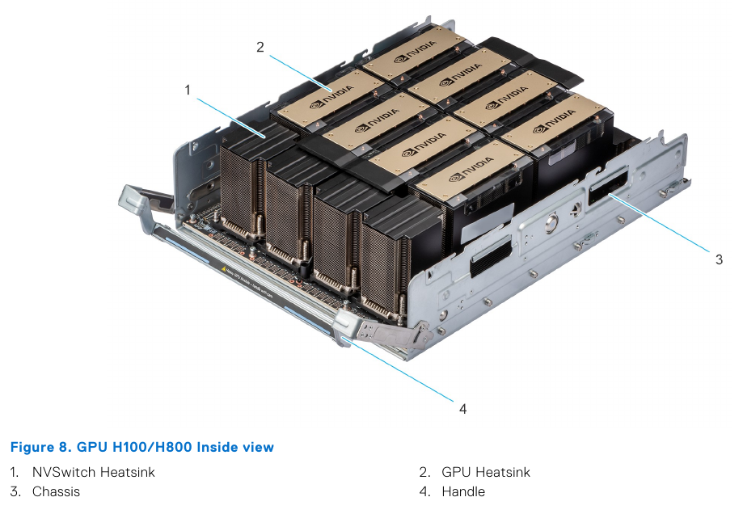
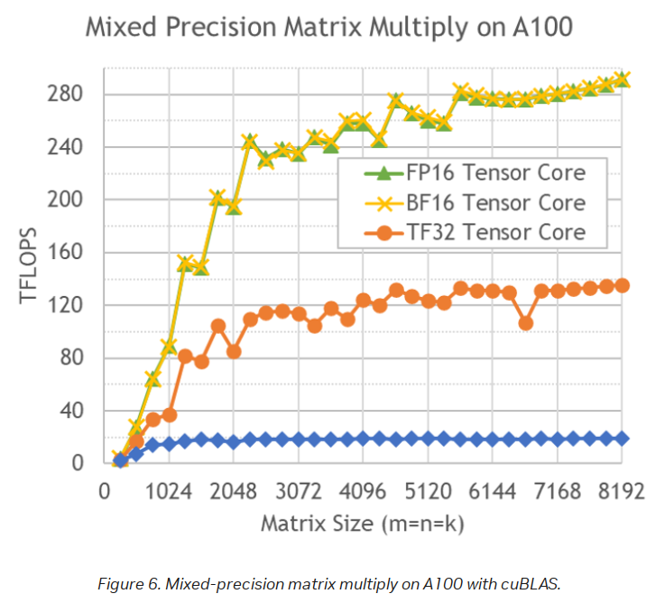

加速器¶
计算加速器是 ML 训练的主力。最初只有 GPU，但如今还有 TPU、FPGA、HPU、QPU、RDU，而且不断有新的种类被发明出来。
ML 主要有两类工作负载——训练和推理（inference）。此外还有微调（fine-tuning）工作负载，它通常与训练没有区别，除非进行的是轻得多的 LORA 风格微调。后者所需的时间和资源都比普通微调少得多。
在语言模型的推理过程中，生成是按序列进行的——一次只生成一个词元（token）。因此它必须把同一个 forward 调用重复数千次，每次执行一个规模不大的 matmul（矩阵乘法，即 GEMM）。这既可以在 GPU 这类加速器上完成，也可以在一些较新的 CPU 上完成——后者也能相当高效地处理推理。
在训练期间，整个序列长度会在一个巨大的 matmul 操作中一次性处理。因此，如果序列长度为 4k，那么同一个模型的训练就需要一个能处理比推理多 4k 倍运算、并且要足够快的计算单元。加速器非常擅长这类任务。事实上，需要相乘的矩阵越大，计算效率就越高。
另一个计算上的差异是：尽管训练和推理在 forward（前向）传播中都要执行总量相同的 matmul，但只针对训练进行的 backward（反向）传播还要额外执行 2 倍的 matmul，用来计算相对于输入和权重的梯度。如果使用激活重计算，则还要再执行一次 forward。因此，训练过程所需的 matmul 数量是推理的 3-4 倍。
子章节¶
通用：
NVIDIA：
AMD：
高端加速器的真实现状鸟瞰¶
尽管这种情况未来可能会改变，但与消费级 GPU 市场不同，截至 2026-08，高端加速器并没有那么多；如果你在云上租用算力，大多数云服务商能提供的加速器大致就是同样的那几款。
GPU：
- 截至目前，ML 云/HPC 平台已经配备了 B200/B300，GB200/GB300 NVL72 机架也已开始出货。Rubin 预计将于 H2-2026 出现。
- AMD 的 MI325X 现在在二线云服务商（Tier 2）上已经广泛可用。MI355X 开始现身。MI455X 希望能在 2026 年推出。新变化：大型云服务商（CSP）也开始提供 AMD GPU
- Intel 的 GPU D 系列（D270，代号 Crescent Island）是一款面向推理的 Xe3P 数据中心 GPU，在 OCP 2026 上发布，客户送样在 H2-2026。Intel 只公布了它的 FP8 峰值（1.3 PFLOPS）。参见 Intel GPU D-series
HPU：
- Intel 的 Gaudi2 和 Gaudi3 已在 Intel 云上可用。
- Falcon Shores 原定于 2025 年取代 Gaudi——更新：该项目已被取消
TPU：
- Google 的 TPU 当然也可以用，但它们并不是最理想的选择，因为你只能租用它们，而且软件在 GPU 与 TPU 之间并不能很方便地互相转换，所以许多（也许是大多数？）开发者仍然留在 GPU 阵营，因为他们不想被锁定在 Google 一家垄断的硬件上。
- Amazon 的 Trainium2 与 TPU 架构非常相似，可在 AWS 上租用
关于 Pod 与机架：
- Cerebras 的 WaferScale Engine（WSE）
- SambaNova 的 SambaRack（目前是 SN40L，SN50 从 H2-2026 起）
- 数十种不同的 Pod 与机架配置，它们用超高速互联把前述 GPU 组合起来。
截至 2026-07-31，大致就是这些。
本文档的其余部分将详细对比上述大多数产品；如果你想阅读规格参数，请前往这里。
由于我们大多数人都只能租用算力，从来没见过它真实的样子，下面是一台 8xH100 节点在物理上的样子（这是 Dell PowerEdge XE9680 机架服务器的 GPU 托盘）：

术语表¶
- BLAS: Basic Linear Algebra Subprograms（基础线性代数子程序）
- CPU: Central Processing Unit（中央处理器）
- CTS: Custom Thermal Solution（定制散热方案）——厂商支持的散热选项，允许使用高于默认值的功耗上限
- CU: Compute Unit（计算单元）——AMD 对应于 NVIDIA SM 的单元
- CUDA: Compute Unified Device Architecture——NVIDIA 的 GPU 编程平台
- DCORE：Intel 用来报告 Gaudi3 缓存容量的芯片核心（die core）；一颗 Gaudi3 有 4 个
- DGX：NVIDIA 的整机交付（turn-key）加速器服务器产品线
- ECC: Error Correcting Code（纠错码）
- FMA: Fused Multiply Add（融合乘加）
- FPGA: Field Programmable Gate Arrays（现场可编程门阵列）
- GA: Generally Available（正式可用）——指产品实际可以购买或租用，而不只是公布、送样或仅有规格
- GCD: Graphics Compute Die（图形计算裸片）
- GEMM: General Matrix Multiply（通用矩阵乘法）
- GPU: Graphics Processing Unit（图形处理器）
- HBM: High Bandwidth Memory（高带宽内存）
- HFU: Hardware FLOPS Utilization（硬件 FLOPS 利用率）
- HGX：NVIDIA 的加速器基板（baseboard），OEM 厂商围绕它构建自己的服务器
- HPC: High-performance Computing（高性能计算）
- HPU：Habana Gaudi AI Processor Unit（Habana Gaudi AI 处理器单元）
- LLC: Last Level Cache（最后一级缓存）
- MAMF: Maximum Achievable Matmul FLOPS（矩阵乘法的最大可达 FLOPS）
- MFU: Model FLOPS Utilization（模型 FLOPS 利用率）
- MIG: Multi-Instance GPU（多实例 GPU）——NVIDIA 将一块 GPU 划分为多个相互隔离实例的技术
- MME: Matrix Multiplication Engine（矩阵乘法引擎）
- MSMF: Maximum Sustainable Matmul FLOPS（矩阵乘法的最大可持续 FLOPS）
- NVL72：包含 72 块加速器的 NVLink 域；NVL8 与 NVL36 依此类推
- OAM: OCP Accelerator Module（OCP 加速器模块）——开放计算项目（Open Compute Project）的加速器外形规格
- PSU: Power Supply Unit（电源供应单元）
- PTX: Parallel Thread Execution（并行线程执行）——NVIDIA 的 GPU 中间指令集
- QPU: Quantum Processing Unit（量子处理器）
- RDU: Reconfigurable Dataflow Unit（可重构数据流单元）
- SM: Streaming Multiprocessor（流式多处理器）——NVIDIA 对应于 AMD CU 的单元
- SRAM: Static Random Access Memory（静态随机存取存储器）
- TBP：Typical Board Power（典型板卡功耗）或 Total Board Power（总板卡功耗），依厂商而异
- TDP：Thermal Design Power（热设计功耗）或 Thermal Design Parameter（热设计参数）
- TGP: Total Graphics Power（总图形功耗）
- TPC: Tensor Processing Core（张量处理核心）
- TPU: Tensor Processing Unit（张量处理单元）
- WSE: Wafer Scale Engine（晶圆级引擎）——Cerebras 的整片晶圆加速器
- XCD: Accelerator Complex Die（加速器复合裸片）——AMD 按裸片报告缓存时的口径
- XLA: Accelerated Linear Algebra（加速线性代数）——TPU 和 Trainium 上 PyTorch/JAX 背后的编译器
最需要理解的一点¶
我会在本书中多次重复下面这句话：仅仅购买/租用最昂贵的加速器并期待获得高投资回报率（ROI）是不够的。
衡量 ML 训练高 ROI 的两个指标是：
- 训练完成的速度，因为如果训练比计划多花 2-3 倍的时间，你的模型可能还没发布就已经无关紧要了——在当今竞争极其激烈的 ML 市场中，时间就是一切。
- 训练模型所花的钱（$$），因为如果训练比计划多花 2-3 倍的时间，最终你会多花 2-3 倍的钱。
如果其余购买/租用的硬件没有经过精心挑选以匹配所需的工作负载，那么很可能出现的情况是：加速器大量空闲，时间和钱都会白白损失。其中最关键的部件是网络，其次是存储，最不重要的是 CPU 和 CPU 内存（至少对于典型的训练负载而言如此，因为 CPU 方面的任何限制都可以通过多个 DataLoader 工作进程来弥补）。
如果算力是租来的，通常就没有多少选择自由——硬件要么是一成不变的，要么某些部件虽然可以更换，但选择也不多。因此有时会遇到所选云服务商提供的硬件与需求匹配得不够好，这种情况下最好另寻一家服务商。
如果你是自行购买服务器，我建议在购买前做非常深入的尽职调查。
当然，除了硬件，你还需要能够高效利用这些硬件的软件。
我们将在本书的多个章节中分别讨论硬件和软件两方面。你可以从这里和这里开始阅读。
我们关心加速器的哪些特性¶
在接下来的各节中，我们以 NVIDIA A100 的规格作为参照。

TFLOPS¶
ML 训练和推理所做的大部分工作都是矩阵乘法。如果你还记得代数课上的内容，矩阵乘法由大量乘法再求和构成。这些计算都可以被计数，并由此可以界定芯片在一秒内能执行多少次这样的运算。
这是评价加速器的关键特性之一。TFLOPS 这个术语表示芯片一秒内可以执行多少万亿次浮点运算（Floating Point Operations）。越多越好。不同数据类型有不同的定义。例如，下面是来自 A100 规格理论峰值 TFLOPS 的几个条目：
| 数据类型 \ TFLOPS | 不使用稀疏性 | 使用稀疏性 |
|---|---|---|
| FP32 | 19.5 | n/a |
| Tensor Float 32 (TF32) | 156 | 312 |
| BFLOAT16 Tensor Core | 312 | 624 |
| FP16 Tensor Core | 312 | 624 |
| FP8 Tensor Core | 624 | 1248 |
| INT8 Tensor Core | 624 | 1248 |
注意：
-
INT8 以 TeraOperations（万亿次操作）计，因为它不是浮点运算。
-
FLOPS 这个术语既可能指浮点运算的总次数，例如在统计一次 Transformer 迭代需要多少 FLOPS 时；也可能指每秒浮点运算次数——所以要注意上下文。阅读加速器规格时，它几乎总是指每秒的次数。而在讨论模型架构时，它通常只是指浮点运算的总次数。
由此可见，int8 比 bf16 快 2 倍，而 bf16 又比 tf32 快 2 倍。
此外，TFLOPS 还取决于矩阵的大小，从下面这张表就可以看出来：

正如你所看到的，由于分块（tile）与波（wave）量化效应，性能差异是非线性的。请注意，图中的蓝线对应的是 FP32 Tensor Core。
如何计算理论 TFLOPS¶
加速器规格上公布的正是理论峰值 FLOPS。它的计算方式是：
Theoretical FLOPS = compute_unit_clock_speed * FLOPs_per_clock_cycle_per_compute_unit * num_compute_units
其中：
compute_unit_clock_speed——计算单元的时钟每秒振荡的次数，单位为 Hzflops_per_clock_cycle_per_compute_unit——计算单元每个时钟周期能执行的浮点运算次数。num_compute_units——设备中有多少个这样的单元
每个计算单元每时钟周期的 FLOPs 数通常不会公布，但经常能查到的是每个计算单元每时钟周期的 FMA 次数。FMA 即 Fused Multiply Add（融合乘加）。由于 1 次 FMA 由 2 次 FLOP 组成，我们可以把上面的公式展开为：
Theoretical FLOPS = compute_unit_clock_speed * FMAs_per_clock_cycle_per_compute_unit * 2 * num_compute_units
我们来验证这个公式是否成立。计算一些 BF16（半精度）的 TFLOPS，并与公布的规格进行比较。
首先，从 wiki 中提取所需的加速器规格。
麻烦之处在于找到 BF16（半精度）下每个 Tensor Core 每时钟周期的 FMA 次数。我在这里找到了它们。这些数字大多来自 A100 白皮书（在 pdf 中搜索 "FMA"，然后选择你所关心的目标精度下列出的那些数字）。H100 白皮书省略了许多具体的 FMA 数字，但给出了相对于 A100 白皮书所列 FMA 数字的倍数关系）。
下面计算中使用的时钟频率，以及各家厂商标出的时钟频率实际意味着什么，都收集在时钟频率一节中。
NVIDIA @ BF16：
对 NVIDIA 来说，BF16 运算由 Tensor Core 执行。
| 加速器 | 时钟频率 | 每个 Tensor Core 每时钟周期的 FMA 次数 | Tensor Core 数 | 标称 TFLOPS | 备注 |
|---|---|---|---|---|---|
| H100 SXM | 1830MHz | 512 | 528 | 989 | 1 |
| A100 SXM | 1410MHz | 256 | 432 | 312 | 1 |
Tensor Cores是推算出来的：每个 SM 有 4 个 Tensor Core，H100 SXM 有 132 个 SM，A100 SXM 有 108 个 SM。
现在我们来算一下，把上表中的数字代入最后那个基于 FMA 的公式：
1830*10**6 * 512 * 2 * 528 / 10**12 = 989.430TFLOPS1410*10**6 * 256 * 2 * 432 / 10**12 = 311.87TFLOPS
两个计算结果都与公布的规格吻合——H100 SXM 为 989，A100 SXM 为 312。
请注意，这个峰值是整个加速器加总的结果——528 个 Tensor Core 就是 4 x 132 个 SM——所以单次 matmul 达不到这个水平，除非这次矩阵乘法足够大，能占满每一个 SM。至于为什么 SM 更多的芯片并不自动就提供更多 TFLOPS，参见更多 SM 是否意味着更多 TFLOPS？。
上面的 H100 SXM 时钟频率是 1830MHz，这是 NVIDIA 现在官方给出的数字。早先广泛公布的数字是 1980MHz，但它对不上：1980*10**6 * 512 * 2 * 528 / 10**12 = 1070.530 TFLOPS，比规格值高出约 80。在 1830MHz 成为官方数字之前，其实就可以把同一个公式反过来、代入规格中的 TFLOPS 来反推出它：989 / (512 * 2 * 528 / 10**12) / 10**6 = 1829.20。这总体上是个有用的技巧——如果厂商公布了 TFLOPS 却没有公布时钟频率，或者公布的时钟频率算不出他们自己给出的 TFLOPS，这个公式能告诉你他们实际用的是哪个数字。
AMD @ BF16：
| 加速器 | 峰值引擎时钟 | 每个 Matrix Core 每时钟周期的 FMA 次数 | Matrix Core 数 | 标称 TFLOPS | 备注 |
|---|---|---|---|---|---|
| MI355X | 2400MHz | 512 | 1024 | 2500 | 1 |
| MI350X | 2200MHz | 512 | 1024 | 2300 | 1 |
| MI300X | 2100MHz | 256 | 1216 | 1307 | |
| MI250X | 1700MHz | 128 | 880 | 383 | 2 |
- AMD 公布的 MI355X 和 MI350X 的 BF16 矩阵值是
2.5 PFLOPS和2.3 PFLOPS，四舍五入到两位有效数字——按公式算出来是 2516.6 和 2306.9。 - AMD 公布了 MI355X 和 MI350X（1024）以及 MI300X（1216）的 Matrix Core 数量，但没有公布 MI250X 的，因此这里的 880 是推算出来的：每个 CU 有 4 个 Matrix Core，共 220 个 CU。
我们照旧自己算一遍：
2400*10**6 * 512 * 2 * 1024 / 10**12 = 2516.6TFLOPS——按 AMD 自己的取整方式，与其公布的2.5 PFLOPS一致2200*10**6 * 512 * 2 * 1024 / 10**12 = 2306.9TFLOPS——与 AMD 公布的 MI350X 的2.3 PFLOPS一致，MI350X 与 MI355X 是同一块硅片，只是时钟频率更低2100*10**6 * 256 * 2 * 1216 / 10**12 = 1307.4TFLOPS——与公布的规格一致，尽管你在文献中看到的多数是向下取整后的1300TFLOPS。1700*10**6 * 128 * 2 * 880 / 10**12 = 383.0TFLOPS——与公布的规格完全一致
请注意，每个 Matrix Core 的 FMA 次数每代 CDNA 都会翻倍——MI250X（CDNA2）上是 128，MI300X（CDNA3）上是 256，MI355X（CDNA4）上是 512。由于 Matrix Core 的数量几乎没有变化（从 880 到 1216 再到 1024），代际之间 BF16 性能的提升几乎全部来自这种单核心的翻倍，而不是来自更多的核心。
Intel @ BF16：
Intel Gaudi 使用 MME 来执行 BF16 matmul
| 加速器 | MME 时钟 | 每个 MME 每时钟周期的 FMA 次数 | MME 数 | 标称 TFLOPS |
|---|---|---|---|---|
| Gaudi 2 | 1650MHz | 256*256 | 2 | 432 |
| Gaudi 3 | 1600MHz | 256*256 | 8 | 1677 |
我们照旧自己算一遍：
- Gaudi 2:
1650*10**6 * 256*256 * 2 * 2 / 10**12 = 432.5TFLOPS——与公布的规格一致 - Gaudi 3:
1600*10**6 * 256*256 * 2 * 8 / 10**12 = 1677TFLOPS——注意这与白皮书中公布的规格（1835TFLOPS）不一致，因为要达到 1835TFLOPS，时钟频率必须达到 1750MHz。也就是说，当前这一代 Gaudi3 实际运行在 1600MHz。
现在应该很容易看出来了：如果你的加速器以低于规格的加速时钟频率运行（例如过热导致加速器降频），那么预期得到的 TFLOPS 就会低于宣传值。
要查看加速器在负载下的实际时钟频率，请参见时钟频率一节。
TFLOPS 对比表¶
下面来看看各高端加速器支持的数据类型以及对应的理论峰值 TFLOPS 规格（不含稀疏性）。两张表都按 bf16 列排序，并共用同一组注释，注释列在两张表之后。两个 FP4 列对应两种分块缩放（block-scaled）的 FP4 格式：mxfp4 是 OCP 的微缩放（microscaling）格式，每 32 个元素共用一个 2 的幂次的 E8M0 缩放因子；nvfp4 是 NVIDIA 的格式，每 16 个元素一个 E4M3 缩放因子，外加一个张量级的 FP32 缩放因子——该选用哪一种，参见 fp4 格式。
已正式发售：
| 加速器 \ TFLOPS | fp32 | tf32 | fp16 | bf16 | fp8 | int8 | fp6 | mxfp4 | nvfp4 | 注释 |
|---|---|---|---|---|---|---|---|---|---|---|
| NVIDIA GB300 SXM | 80.0 | 1250.0 | 2500 | 2500 | 5000 | 5000 | 5000 | 15000 | 15000 | 24 |
| NVIDIA GB200 SXM | 80.0 | 1250.0 | 2500 | 2500 | 5000 | 5000 | 5000 | 10000 | 10000 | 23 |
| AMD MI355X | 157.3 | ? | 2500 | 2500 | 5000 | 5000 | 10100 | 10100 | X | 22 |
| Google TPU v7x | ? | ? | 2307 | 2307 | 4614 | ? | ? | ? | ? | 25 |
| AMD MI350X | 144.2 | ? | 2300 | 2300 | 4600 | 4600 | 9200 | 9200 | X | 22 |
| NVIDIA B300 SXM | 80.0 | 1125.0 | 2250 | 2250 | 4500 | 4500 | 4500 | 13500 | 13500 | 21 |
| NVIDIA B200 SXM | 80.0 | 1125.0 | 2250 | 2250 | 4500 | 4500 | 4500 | 9000 | 9000 | 20 |
| Intel Gaudi3 | 229.0 | 459.0 | 459 | 1677 | 1677 | V | X | X | X | 8,19 |
| AMD MI325X | 163.4 | 653.7 | 1300 | 1300 | 2610 | 2600 | X | X | X | 18 |
| AMD MI300X | 163.4 | 653.7 | 1300 | 1300 | 2610 | 2600 | X | X | X | 17 |
| NVIDIA H200 SXM | 67.0 | 494.5 | 989 | 989 | 1979 | 1979 | X | X | X | 16 |
| NVIDIA H100 SXM | 67.0 | 494.5 | 989 | 989 | 1979 | 1979 | X | X | X | 12,15 |
| NVIDIA GH200 SXM | 67.0 | 494.5 | 989 | 989 | 1979 | 1979 | X | X | X | 14 |
| Google TPU v6e | ? | ? | 918 | 918 | 918 | 1836 | X | X | X | 13 |
| NVIDIA H200 NVL | 60.0 | 417.5 | 835 | 835 | 1670 | 1670 | X | X | X | 29 |
| NVIDIA H100 PCIe | 51.0 | 378.0 | 756 | 756 | 1513 | 1513 | X | X | X | 12 |
| AWS Trainium2 / Ultra | 181.0 | 667.0 | 667 | 667 | 1299 | X | X | X | X | 11 |
| Google TPU v5p | X | X | X | 459 | X | 918 | X | X | X | 10 |
| Intel Gaudi2 | V | V | V | 432 | 865 | V | X | X | X | 8,9 |
| AMD MI250X | 47.9 | X | 383 | 383 | X | 383 | X | X | X | 7 |
| NVIDIA L40S | 91.6 | 183.0 | 362 | 362 | 733 | 733 | X | X | X | 6 |
| AMD MI250 | 45.3 | X | 362 | 362 | X | 362 | X | X | X | 5 |
| NVIDIA A100 SXM | 19.5 | 156.0 | 312 | 312 | X | 624 | X | X | X | 4 |
| NVIDIA A100 PCIe | 19.5 | 156.0 | 312 | 312 | X | 624 | X | X | X | 3,4 |
| Google TPU v4 | X | X | X | 275 | X | 275 | X | X | X | 2 |
| Google TPU v5e | X | X | X | 197 | X | 394 | X | X | X | 1 |
已宣布，供货情况未确认：
| 加速器 \ TFLOPS | fp32 | tf32 | fp16 | bf16 | fp8 | int8 | fp6 | mxfp4 | nvfp4 | 注释 |
|---|---|---|---|---|---|---|---|---|---|---|
| AMD MI455X | 315.0 | ? | 5000 | 5000 | 10000 | 5000 | 10000 | 20000 | X | 27 |
| NVIDIA Rubin SXM | 130.0 | 2000.0 | 4000 | 4000 | 17500 | 2500 | 17500 | 35000 | 35000 | 26 |
| Huawei Ascend 950DT | X | X | 486 | 486 | 919 | X | X | 1783 | X | 28 |
| Intel GPU D270 | 20.5 | ? | ? | ? | 1300 | ? | X | 2622 | X | 30 |
注释与来源——两张表的 Notes（注释）列都指向这里。编号从最旧的硬件开始向上递增，因此新增内容会取下一个编号并排在这个列表的末尾：
- Google Cloud TPU v5e 文档
- Google Cloud TPU v4 文档
- 奇怪的是，据报道 NVIDIA A100 的 PCIe 与 SXM 版本的规格给出了相同的 TFLOPS；考虑到 SXM 版本功耗高 30%、HBM 快 5%，这一点很不合理。
- NVIDIA A100 规格——涵盖 SXM 和 PCIe 两行
- AMD Instinct MI250 规格
- NVIDIA L40S 规格
- AMD Instinct MI250X 规格
- Intel Gaudi2 和 3 只公布了部分 TFLOPS 规格，但它确实支持 FP32、TF32、BF16、FP16 和 FP8、INT8 以及 INT16。这些数字针对的是 MME（矩阵）计算。
- Intel Gaudi 2 AI 加速器白皮书
- Google Cloud TPU v5p 文档
- Trainium2 还支持 FP8/FP16/BF16/TF32 @ 2563TFLOPS（带 4:1 稀疏性）。参见 AWS Trainium2 架构文档。
- NVIDIA H100 规格——涵盖 SXM 和 PCIe 两行
- Google Cloud TPU v6e 文档
- GH200——与 GB200 的说明同理——一个封装里有 2 颗 GPU，所以表中列出不带稀疏性的单芯片规格。参见 NVIDIA GH200 Grace Hopper Superchip 规格。
- 我没有列入
NVIDIA H100 dual NVL，因为嗯，它是 2 倍数量的 GPU——那样就不公平了——它的 FLOPS 与 H100 相同，但一切都是两倍，而且显存还多一点（每颗芯片 94GiB，而 H100 是 80GiB），显存也稍快一些。 - H200 与 H100 相同，但 HBM 显存为 141GiB 而非 80GiB，并且显存更快，为 HBMe@4.8TBps，对比 HBM@3.35TBps——所以基本上 H200 解决了 H100 的显存带宽和显存容量瓶颈。参见 NVIDIA H200 规格。
- AMD Instinct MI300X 规格
- MI325X 的算力与 MI300X 相同，但显存更多、功耗也更高（计算效率更高）。参见 AMD Instinct MI325X 规格。
- 截至 2026-08，Gaudi3 实际运行在 1600MHz（MME），而不是计划中的 1750MHz，因此其 BF16 TFLOPS 是 1677，而不是白皮书规格中的 1835。fp8 同理，它的 TFLOPS 与 BF16 相同。
- NVIDIA DGX B200 数据表——
FP4 Tensor Core: 144|72petaFLOPS 稀疏|稠密，对应 8 颗 GPU，即每颗 GPU 稠密 9000；HGX 页面与此一致（查阅于 2026-10-02）。NVIDIA 对 Blackwell 只公布一个 FP4 速率，其 GB200 NVL72 页面把它标注为NVFP4，而 tensor core 通过同一条tcgen05.mma.kind::mxf4nvf4指令、以相同的速率运行这两种 FP4 格式（参见 CUTLASS Blackwell 文档），所以 NVIDIA Blackwell 每一行的mxfp4和nvfp4列填的都是同一个数字。 - NVIDIA DGX B300 数据表——
FP4 Tensor Core 144|108PFLOPS 稀疏|稠密，对应 8 颗 GPU，即每颗 GPU 稠密 13500，正是数据表所宣传的相对 B200 提升 1.5 倍的稠密 FP4（"1.5x dense FP4"）；HGX 页面与此一致（查阅于 2026-10-02）。常被引用的 B300 的 15000，其实是 GB300 的单 GPU 数字。 - AMD Instinct MI355X 规格——这些是 AMD 给出的稠密数值。AMD 还公布了恰好为 2 倍的
with Structured Sparsity（带结构化稀疏）版本——OCP-FP8 为 10.1PFLOPS、FP16 矩阵为 5PFLOPS——所以别处引用的 10.1PFLOPS 的 fp8 数字是稀疏值，不是本表中的值。AMD 页面上的fp6和fp4条目没有标注稀疏性限定词，是稠密值。MI350X 是同一颗芯片，运行在 2200MHz、1000W，各项数字按频率比例缩放（fp32 为 144.2 对 157.3）：AMD 公布 FP16 和 BF16 为 2.3PFLOPS，OCP-FP8 和 INT8 为 4.6PFLOPS，MXFP6 和 MXFP4 为 9.2PFLOPS，全部为稠密值，同时有同样 2 倍的with Structured Sparsity版本。 - 由于 GB200 相当于 2 倍的 B200 芯片，表中给出的是每颗芯片的 TFLOPS，以便公平比较——要得到真正的 GB200，你需要把这些数字乘以 2——而且它似乎把 B200 芯片跑得更快一些，所以规格比单独的 B200 更高。这也意味着，你不会拿到通常那种 8 GPU 节点，而是会拿到一个 4 GPU 节点（但它相当于 8 颗 B200，算力还额外快约 10%）。参见 NVIDIA GB200 NVL72 规格。
- GB200 NVL72 与 GB300 NVL72 看起来相同，只是后者的 fp4 更快、显存更多。参见 NVIDIA GB300 NVL72 规格。
- Google Cloud TPU v7x 文档——Google 称之为 "the latest TPU available on Google Cloud"（Google Cloud 上可用的最新 TPU），并说明可通过 GKE 或 Compute Engine 使用它，所以这里把它和文中其他所有 TPU 一样视为可用，而这些全都只能租用且受容量限制。只有 fp16、bf16 和 fp8 公布了数字；该行其余是
?，因为 Google 尚未给出这些数值。 - NVIDIA Vera Rubin NVL72 规格——属于预发布产品，所以这些是公布的数字，而不是已出货芯片的规格表。
- AMD 的 MI455X 数字来自其产品页面，查阅于 2026-08-06。
fp32315、fp165000、bf165000 和int85000 是 AMD 自己给出的稠密数值。fp8、fp6和fp4是从 AMD 公布的 20100、20100 和 40300 折半得来的，因为这三个几乎可以肯定是带稀疏性的数值，而 AMD 并未如此声明：AMD 在同一页面上为 FP16、BF16 和 INT8 的稀疏版本明确打了标签，全部为 10100，而如果按面值接受这三个未标注的数字，fp8 就会是 bf16 的 4 倍，而这里其他所有加速器都是 2 倍——MI355X 的值是 2500、5000、10100。折半恰好恢复了这种翻倍关系。AMD 没有为这颗芯片公布 TF32 数字，因此填?。所有这些都还是 AMD Performance Labs 的预估，并附有 "Results subject to change when products are released in market"（产品上市后结果可能变化）的声明。 - Ascend 950DT 的数字来自 Ascend 社区上 Atlas 950 SuperPoD 的产品规格表（查阅于 2026-08-10）：64 颗 Ascend 950DT 在
mxFP4/mxFP8/HiF8/FP16/BF16下的114.1 / 58.8 / 31.1PFLOPS，除以 64 → 1783 / 919 / 486。不要与中文页面上 1024 卡 SuperPoD 的总量混用（那些数字会得到约 1953 / 977 的 mxFP4/mxFP8，且没有 bf16）。fp8列是华为公布的唯一mxFP8/HiF8速率；HiF8 是 tapered-precision（渐变精度），不是 OCP E4M3/E5M2，所以本章的e/m数据类型解码规则对它不适用。未公布的列填X。 - H200 NVL 是 H200 的 PCIe 插卡版本：与 H200 SXM 相同的芯片，同样配备 4.8TBps 的 141GB HBM3e，但功率上限是 600W 而不是 700W，NVIDIA 对其算力的标称值也低约 16%。
tf32、fp16、bf16、fp8和int8列是 NVIDIA 公布的带稀疏性数值 835 / 1671 / 1671 / 3341 / 3341 的一半，并按与 H200 SXM 行相同的方式向下取整。它的 NVLink 只能通过桥接器连接 2 路或 4 路卡，每颗 GPU 为 900GBps，不同桥接组中的 GPU 之间通过 PCIe Gen5 以 128GBps 通信——不像 H200 SXM，那里由 NVSwitch 连接节点的全部 8 颗 GPU。参见 NVIDIA H200 规格。 - Intel GPU D270（代号 Crescent Island）是 Intel 基于 Xe3P 的 GPU D 系列的第一个产品——一款仅用于推理的数据中心加速器（32 个 Xe3P 核、256 个 XMX 矩阵引擎、32MB L2），于 OCP 2026（2026-10-12）宣布，将在 H2-2026 向客户送样。Xe3P XMX 原生支持完整的精度阶梯——FP64、FP32、TF32、FP16、BF16、双格式 FP8（E4M3/E5M2）、FP4、OCP MX 格式（MXFP4/MXFP8）以及 int8/int4——所以这里的
?单元格表示"支持，但速率未公布"，而不是"不支持"。Intel 公开公布的算力数字是 稠密 FP8 的1.3 PFLOPS（没有结构化稀疏），所以fp8填 1300。Intel 的产品规格还给出了 稠密mxfp4= 2622 TFLOPS（FP8 的 2 倍）和向量fp32= 20.5 TFLOPS（向量 FP64 为 10.2，但表中没有对应的列）；这两项是 Intel 的官方数字，但尚未出现在任何公开页面上，所以没有来源链接——它们是厂商规格，不是估计值。其余所有受支持的格式（tf32、fp16、bf16、int8）在 Intel 公布官方速率之前一律保持?（表中不收录估计值）。fp6填X（不在 Intel 的格式列表中），nvfp4填X，因为这颗芯片实现的是 OCP 微缩放 fp4（mxfp4），而不是 NVIDIA 的 nvfp4。参见 Intel GPU D 系列、Intel 新闻室、Tom's Hardware（均查阅于 2026-10-15）。 通用注意事项：
-
int8 以 TeraOperations（万亿次操作）计量，因为它不是浮点运算。
-
如果你发现的数字是上面的两倍——那通常意味着是带稀疏性的数字（目前几乎没有人能从中获益，因为我们的矩阵都是稠密的）。
-
看规格时要非常小心你所读到的数字——许多厂商经常公布带稀疏性的 TFLOPS，因为它们大约大 2 倍，而且即便它们提到了这一点，也常常用小字注明。我曾不得不要求 NVIDIA 在其 H100 规格上加注说明那些数字是带稀疏性的，因为他们最初完全没有提及这一重要的技术事实。而截至 2026-08，99% 的情况下你都不会使用稀疏性，因此大多数时候你真正关心的实际理论 TFLOPS 是不带稀疏性的（也就是上面这张表）。
-
还要注意，如果加速器 A 公布的 TFLOPS 高于加速器 B，并不意味着 A 更快。这些是理论数字，不仅在实践中永远无法达到——实际的 TFLOPS 效率，即硬件 FLOPS 利用率（HFU），在不同厂商之间，甚至同一厂商的不同加速器架构之间，都可能差异很大。
最大可达且可持续的 FLOPS¶
宣传的理论峰值 FLOPS 的问题在于，它们是非常理论化的，即使提供了所有理想条件，在实践中也无法达到。每种加速器都有自己的现实可达 FLOPS，而这并不在宣传之列；社区里有一些零散报告在尽力寻找实际的最佳数值，但我还没找到任何官方报告。
如果你找到可靠的报告（论文？），能给出一款或多款本章讨论过的高端加速器实际可期望的 TFLOPS，请善意地提交一个 PR 附上这些信息。关键在于要有一条可供读者验证所提信息的来源引用。
为了让我所说的内容有具体的数量感，来看看 A100：这张卡的规格中 bf16 峰值性能为 312TFLOPS。在 FlashAttention 发明之前，人们就知道在 fp16/bf16 混合精度训练模式下，150TFLOPS 已接近所能达到的最高值。而有了 FlashAttention，大约是 180+TFLOPS。当然，这是在训练 LLM 的场景下测得的，其中涉及网络和 IO，会带来额外的开销。所以这里可达到的峰值上限大概介于 200 到 300TFLOPS 之间。
你可以用完美对齐的最大尺寸矩阵的 matmul，在单台加速器上实测可达到的峰值 TFLOPS。你可以使用最大可达与可持续 Matmul FLOPS 查找工具来复现结果。当然，这只会告诉你手头这台加速器及其软件栈把 matmul 做得有多好——取决于工作负载，这可能就是你需要的全部信息，也可能远远不够。
MAMF 是最大可达 Matmul FLOPS的缩写，这个术语出自我本人；MSMF 则是最大可持续 Matmul FLOPS——指加速器在其功率上限下饱和后仍能维持的算力。对于做性能优化工作的人来说，这两项都非常实用。
最大可达与可持续矩阵乘 FLOPS 对比表¶
下面的测量针对输入为 BF16、FP8 和 FP4（不含稀疏性）的 matmul 的 TFLOPS（MAMF 与 MSMF 的含义见最大可达与可持续 FLOPS）。MAMF 是短时加速时钟（boost clock）下的性能突发；MSMF 是芯片在功率上限下饱和后仍能维持的水平——评估训练吞吐量时应使用 MSMF。— 表示尚未测量 MSMF。表格按 MAMF % 排序。可用 MAMF 查找器复现这些结果。
BF16：
| 加速器 | MAMF | MSMF | 理论值 | MAMF % |
MSMF % |
同节点其他卡 负载 |
形状 MxNxK （MAMF） |
torch 版本 |
注释 |
|---|---|---|---|---|---|---|---|---|---|
| Intel Gaudi 2 | 419 | — | 432 | 97.0% | — | no | 14336x15360x2048 | 2.6.0+hpu_1.21.2-76 | 1 |
| NVIDIA A100 PCIe | 285 | 258 | 312 | 91.3% | 82.7% | no | 18432x1536x30720 | 2.14.1+cu130 | 2 |
| NVIDIA H200 NVL | 761 | 665 | 835 | 91.1% | 79.6% | yes | 2816x1536x30720 | 2.14.1+cu132 | |
| NVIDIA A100 SXM | 271 | — | 312 | 86.9% | — | no | 1024x10240x5120 | 2.6.0+cu126 | |
| NVIDIA H100 SXM | 853 | 786 | 989 | 86.2% | 79.5% | yes | 2816x1536x40960 | 2.12.0a0 (NGC 26.04) | 17 |
| NVIDIA H200 SXM | 850 | 755 | 989 | 85.9% | 76.3% | yes | 1536x2816x40960 | 2.14.0+cu130 | 3 |
| NVIDIA B300 SXM | 1892 | 1519 | 2250 | 84.1% | 67.5% | no | 10752x14336x3072 | 2.14.0+cu130 | 4 |
| NVIDIA GH200 SXM | 829 | — | 989 | 83.8% | — | no | 1024x15360x4096 | 2.6.0+cu126 | 5 |
| NVIDIA B200 SXM | 1737 | 1439 | 2250 | 77.2% | 64.0% | yes | 4096x8192x3072 | 2.14.0+cu130 | 6 |
| Intel Gaudi 3 | 1243 | — | 1677 | 74.1% | — | no | 16384x4096x768 | 2.6.0+hpu_1.21.4-3 | 1 |
| NVIDIA GB200 SXM | 1822 | — | 2500 | 72.9% | — | no | 4096x9728x2048 | 2.10.0+cu130 | |
| AMD MI355X | 1565 | — | 2500 | 62.6% | — | no | 12288x8192x8192 | 2.8.0+rocm7.0.2 | 7 |
| AMD MI350X | 1411 | 1195 | 2300 | 61.3% | 52.0% | yes | 4608x4096x7168 | 2.13.0+rocm10.0.0 | 8 |
| AMD MI325X | 785 | 787 | 1300 | 60.4% | 60.5% | no | 9216x9728x8192 | 2.9.1+rocm7.2.1 | 9 |
| AMD MI300X | 634 | 616 | 1300 | 48.8% | 47.4% | yes | 6144x4864x8192 | 2.13.0+rocm10.0.0 | 10 |
FP8（float8_e4m3fn）：
| 加速器 | MAMF | MSMF | 理论值 | MAMF % |
MSMF % |
同节点其他卡 负载 |
形状 MxNxK （MAMF） |
torch 版本 |
注释 |
|---|---|---|---|---|---|---|---|---|---|
| Intel Gaudi 2 | 827 | — | 865 | 95.6% | — | no | 6144x11264x5120 | 2.6.0+hpu_1.21.2-76 | 1 |
| NVIDIA H200 NVL | 1366 | 1160 | 1670 | 81.8% | 69.5% | yes | 1536x2816x40960 | 2.14.1+cu132 | |
| NVIDIA B300 SXM | 3608 | 2969 | 4500 | 80.2% | 66.0% | no | 6144x18432x3072 | 2.14.0+cu130 | 11 |
| NVIDIA H100 SXM | 1535 | 1364 | 1979 | 77.6% | 68.9% | yes | 1280x16896x16384 | 2.12.0a0 (NGC 26.04) | 17 |
| NVIDIA GH200 SXM | 1535 | — | 1979 | 77.6% | — | no | 1024x14336x14336 | 2.6.0+cu126 | 5 |
| NVIDIA H200 SXM | 1525 | 1354 | 1979 | 77.1% | 68.4% | yes | 1280x16896x16384 | 2.14.0+cu130 | 12 |
| Intel Gaudi 3 | 1290 | — | 1677 | 76.9% | — | no | 16640x1536x3072 | 2.6.0+hpu_1.21.4-3 | 1 |
| NVIDIA B200 SXM | 3350 | 2788 | 4500 | 74.4% | 62.0% | yes | 6912x19968x1024 | 2.14.0+cu130 | 13 |
| NVIDIA GB200 SXM | 3616 | — | 5000 | 72.3% | — | no | 19456x5120x1536 | 2.10.0+cu130 | |
| AMD MI325X | 1464 | 1431 | 2600 | 56.3% | 55.0% | no | 9216x4864x8192 | 2.9.1+rocm7.2.1 | 18 |
| AMD MI300X | 1230 | 1182 | 2600 | 47.3% | 45.5% | yes | 6144x4864x12288 | 2.13.0+rocm10.0.0 | 14 |
FP4（nvfp4、mxfp4）：
| 加速器 | 格式 | MAMF | MSMF | 理论值 | MAMF % |
MSMF % |
同节点其他卡 负载 |
形状 MxNxK （MAMF） |
torch 版本 |
注释 |
|---|---|---|---|---|---|---|---|---|---|---|
| NVIDIA B200 SXM | nvfp4 | 6746 | 5627 | 9000 | 75.0% | 62.5% | yes | 2816x18944x14336 | 2.14.0+cu130 | 15 |
| NVIDIA B200 SXM | mxfp4 | 6183 | 5222 | 9000 | 68.7% | 58.0% | yes | 2048x18944x16384 | 2.14.0+cu130 | 16 |
| NVIDIA B300 SXM | nvfp4 | 8909 | 7434 | 13500 | 66.0% | 55.1% | yes | 18944x4096x12288 | 2.14.1+cu132 | 19 |
| NVIDIA B300 SXM | mxfp4 | 6607 | 5847 | 13500 | 48.9% | 43.3% | yes | 2048x18944x19456 | 2.14.0+cu130 | 20 |
买方须知（caveat emptor）：这些数字来自 mamf-finder.py --search auto（或对相同或等效形状做的网格确认），使用的是测量时可用的软件栈。Siblings = yes 的行是用 mamf-finder-all-gpus.py 测出的：该脚本在节点其余 GPU 持续跑矩阵乘法的同时，依次在节点每一块 GPU 上运行 mamf-finder.py，以模拟训练时所有卡同时计算的情形，并报告处于中位的那块 GPU。Siblings = no 的行是单独测量一块 GPU、其余卡空闲时的结果；对于 GPU 共享供电和散热的板卡，这个读数可能比同一块 GPU 在繁忙节点上能维持的数值更高。请在你自己的配置上重新测量，才能得到真正属于你这台机器的数字——这里的数字只是粗略估计，不是绝对值。随着软件改进，这些数字会向理论规格靠拢，因此最好每 6 个月左右重新测量一次。
这些数字有多精确：测量值本身就有波动，所以不要把任何一行当作精确值——而且大部分差异来自芯片之间，而不是重复运行之间。举两个例子，并非逐行说明：在一个 8x H200 节点上，每块 GPU 以同样的 685–688 W 功耗运行同一个 MSMF 形状，却能维持 745–765 TFLOPS，而且较快的 GPU 运行在更高的时钟频率上——最慢的是 1860 MHz，最快的是 1913 MHz；在一个 8x B200 节点上，同样的测试得到 1421–1460 TFLOPS，功耗为 978–987 W，时钟频率为 1399 对 1438 MHz。同样功耗下，体质更好的芯片能维持更高的时钟频率——这就是硅片抽签（silicon lottery）——而在这些节点上散热几乎没有影响：每块 GPU 都是被功耗上限而不是温度限制住的，最热与最冷的 GPU 之间 8–11°C 的温差造成的影响不到它们时钟差距的十分之一（参见散热）。重跑同一块 GPU 通常只会让数字变动 1% 以内，最多 2.2%。因此，Siblings = yes 的行描述的是某个节点中位 GPU 的表现，Siblings = no 的行描述的是一块 GPU，而且都是在当时的软件下测出的；换一个节点、驱动或 torch 版本，数字就会变化。其他 GPU 的波动幅度也可能各不相同，所以两行之间、或某一行与你自己的测量之间相差几个百分点，都应视为噪声，而不是真实的差异。
注释——上述三张表的 Notes（注释）列都指向这里：
- Intel Gaudi 2 与 Intel Gaudi 3（两张表均适用）：
PT_HPU_LAZY_MODE=1 - NVIDIA A100 PCIe，BF16：80GB，300 W；3 次运行的中位数；MAMF @ 1395 MHz；MSMF 258 @ 2304x1536x6144，~299 W @ 1326 MHz
- NVIDIA H200 SXM，BF16：MAMF ~148–167 W @ 1980 MHz；MSMF 755 @ 1536x2816x6144，~685–688 W @ 1860–1918 MHz，63–71°C
- NVIDIA B300 SXM，BF16：B300 SXM6 AC 1100 W；MAMF ~286 W @ 2032 MHz；MSMF 1519 @ 8192x18432x1024，~1066 W @ 1455 MHz
- NVIDIA GH200 SXM（两张表均适用）：900W 141GiB HBM3e 版本
- NVIDIA B200 SXM，BF16：MAMF ~274–300 W @ 1965 MHz；MSMF 1439 @ 3072x18944x4608，~978–987 W @ 1399–1443 MHz，61–74°C
- AMD MI355X，BF16：
PYTORCH_TUNABLEOP_ENABLED=0 - AMD MI350X，BF16：
PYTORCH_TUNABLEOP_ENABLED=1，1000 W；amdsmi采样到的 ~340 W @ 2181 MHz 落后于 MAMF 突发，与 MI300X 上的情况一样（见注释 10）；MSMF 1195 @ 4096x4096x8192，1000 W，74–100°C。这个节点的散热限制了它的 MSMF：4 块处于 74–77°C 的 GPU 在 1000 W 上限下维持了 1212–1274，4 块处于 95–100°C 的只有 898–1177，其中一块在 100°C 时限频到上限以下，因此散热良好的节点可能测出更高的值。由 Amy Sartran 测量。 - AMD MI325X，BF16：
PYTORCH_TUNABLEOP_ENABLED=1、numa_balancing=0，1000 W。MSMF 787 @ 9216x9728x8192，1000 W @ 1577 MHz，73°C。 - AMD MI300X，BF16：
PYTORCH_TUNABLEOP_ENABLED=1，750 W；MAMF 不是一次加速突发——这张卡跑第一个 ~4 ms 的内核时就已触及 750 W 上限，amdsmi采样到的 ~198 W @ 2088 MHz 落后于实际功耗，读数接近空闲状态（~180 W @ 2095 MHz）；MSMF 616 @ 9216x9728x8192，750 W @ 1203–1261 MHz，77–89°C。由 Amy Sartran 测量。 - NVIDIA B300 SXM，FP8：MAMF ~262 W @ 2032 MHz；MSMF 2969 @ 6144x18432x3072，~1057 W @ 1425 MHz
- NVIDIA H200 SXM，FP8：MAMF ~154–163 W @ 1980 MHz；MSMF 1354 @ 1536x2816x10240，~683–689 W @ 1767–1848 MHz，63–72°C
- NVIDIA B200 SXM，FP8：MAMF ~270–312 W @ 1965 MHz；MSMF 2788 @ 3072x18944x6144，~975–982 W @ 1399–1447 MHz，61–73°C
- AMD MI300X，FP8：
float8_e4m3fnuz、PYTORCH_TUNABLEOP_ENABLED=1，750 W；MAMF 不是一次加速突发，与注释 10 相同；MSMF 1182 @ 8192x4864x4096，750 W @ 1322–1378 MHz，73–86°C。由 Amy Sartran 测量。 - NVIDIA B200 SXM，nvfp4：每 16 个元素共用一个
float8_e4m3fn缩放因子；MAMF ~281–323 W @ 1965 MHz；MSMF 5627 @ 18944x3328x12288，~983–991 W @ 1489–1521 MHz，60–73°C。理论值是 NVIDIA 公布的单一稠密 FP4 数值，见 TFLOPS 对比表 下的 B200 注释。达到理论值的 75.0% / 62.5%，nvfp4 与这块 GPU 的 FP8 行（74.4% / 62.0%）基本持平，也就是说它兑现了规格所承诺的、相对 FP8 的完整 2 倍性能。 -
NVIDIA B200 SXM，mxfp4：每 32 个元素共用一个
float8_e8m0fnu缩放因子；MAMF ~279–320 W @ 1965 MHz；MSMF 5222 @ 2048x18944x20480，~975–988 W @ 1452–1505 MHz，60–73°C。尽管 NVIDIA 对两种格式给出同一个 FP4 速率，而且 mxfp4 的缩放因子数量只有 nvfp4 的一半，它在 MAMF 和 MSMF 上仍落后 nvfp4 7–8%，这说明问题出在软件路径而不是硬件：torch 2.14 的_scaled_mm不接受 mxfp4，所以mamf-finder.py通过torch._scaled_mm_v2（即torch.nn.functional.scaled_mm背后的算子）来运行它。 -
NVIDIA H100 SXM（两张表均适用）：在其余卡带负载的情况下，对八块 80 GB GPU 取中位数，每块 GPU 700 W，NGC 26.04，CUDA 13.2。BF16 MSMF 786 @ 2816x1536x8192，650-685 W @ 1958-1980 MHz，53-65°C。FP8 MSMF 1364 @ 1536x2816x12288，667-681 W @ 1902-1974 MHz，52-63°C。
- AMD MI325X，FP8：
float8_e4m3fnuz、PYTORCH_TUNABLEOP_ENABLED=1、numa_balancing=0，1000 W。MSMF 1431 @ 9216x4864x8192，1000 W @ 1528 MHz，74°C。 - NVIDIA B300 SXM，nvfp4：每 16 个元素共用一个
float8_e4m3fn缩放因子；B300 SXM6 AC 1100 W；MAMF ~271–300 W @ 2032 MHz；MSMF 7434 @ 18944x4096x12288，~1063–1075 W @ 1402–1435 MHz，64–69°C。torch 2.14.1+cu132 自带 cuBLAS 13.4，它使用基于 B300 更快的sm_103aFP4 路径的sm103内核来运行；而 torch 2.14.0+cu130 里的 cuBLAS 13.1 会选择sm100内核，只能达到 7526 / 6410。 - NVIDIA B300 SXM，mxfp4：每 32 个元素共用一个
float8_e8m0fnu缩放因子；MAMF ~267–307 W @ 2032 MHz；MSMF 5847 @ 2048x18944x19456，~1065–1076 W @ 1534–1621 MHz，64–74°C。它运行在 torch 自己的sm100内核上，而不是 cuBLAS 的内核，所以无论 torch 2.14.0+cu130 还是 2.14.1+cu132，都用不到 B300 更快的sm_103aFP4 路径。
通用说明：
- 完整的理论值集合见理论加速器 TFLOPS
MAMF %/MSMF %就是MAMF/Theory*100和MSMF/Theory*100- 虽然大多数用户关心的可能是
mean（平均值），但脚本同时报告max、median和mean，以防你想要其他数字。 Shape列给出的是 MAMF 形状；MSMF 的形状、它的功耗、时钟频率和 GPU 温度都在编号注释里。性能几乎相同的形状通常有很多——这里列出它们是为了可复现。Siblings=yes：在节点其余 GPU 持续跑矩阵乘法的同时，测量节点上的每一块 GPU，MAMF 和 MSMF 取中位 GPU 的结果。Siblings=no：只测量一块 GPU，其余卡空闲。mamf-finder.py如何测量这两种情况，这里有说明。- 如果你得到的性能明显低于表中的数字，请检查目标硬件的散热是否充分——加速器过热时通常会把性能降下来。当然，这里的前提是供电符合规格。供电在数据中心里很少成为问题，但散热不良并不是没听说过。
- 用什么软件可能带来巨大差别——例如，在 MI300X 上用 ROCm-6.1 我测到过 450TFLOPS，但你可以看到 ROCm-6.2 带来了巨大改进，又惊人地多了 300TFLOPS。BLAS 库的类型/版本也可能有很大影响。
- 此外还有各种系统层面的优化——例如对 MI300X 来说，必须在内核设置中禁用 numa_balancing。
- 各行之间并不总是完全可比的。每一行都是针对那块加速器找到的最佳形状，而且往往是在不同的
torch/CUDA 或 ROCm 版本上测的，所以任意两行之间的差距都混杂了硬件、形状和软件三方面因素。不过，用来和理论规格对比，它仍是足够好的参考。随着软件演进需要重新测量，而且结果很可能更好，但我本人接触不到所有 GPU，尤其是老型号，因此非常欢迎读者投稿。测量并提交一行的方法见如何报告 MAMF/MSMF 条目。 - 在所有有 MSMF 的行中，H200、B200 和 A100 PCIe 是用
mamf-finder.py的基准测试第 4 版测的（报告头部会打印该版本号），而 B300 和 MI300X 用的是更早的版本，两个版本对 MAMF 和 MSMF 这两个指标的定义不同，所以这两行与其他行只能粗略比较。 - MI325X 是在 2026-10-05 用未改动的第 4 版查找器、在
30ddd970提交上、其余卡空闲时测得的。这些是取得最佳 MAMF 的单次运行配对结果，不是重复测量的中位数，也不是整节点结果。FP8 的输入和输出使用所列出的厂商格式。重复运行的波动范围以及另一些独立运行得到的更高 MSMF，见测量细节。 - AMD MI250X 有 2 个 GCD——所以理论 TFLOPS 需要减半，因为单个矩阵乘法只会用到其中 1 个，而 383TFLOPS 是 2 个 GCD 的标称值。
为什么 MSMF 远低于理论值（以及这为什么不代表 GPU 有故障）：宣传的峰值假定了芯片处于加速时钟（例如 B200 ~1965 MHz → 2250 bf16 TFLOPS）。而真正占满 SM 的稠密矩阵乘法会拉满 TDP（B200 1000 W / B300 1100 W / H200 700 W——这些是规格上限，而不是低于规格的某个“上限”），所以 SM 的时钟频率会稳定在远低于加速时钟的水平。粗略上限：Theory × sustained_clk / boost_clk ≈ 2250 × 1410/1965 ≈ 1615（在 B200 上）——与实测的 MSMF 1439 相差不远（其余部分是真实内核的开销）。稀疏布局可以在同样贴着 TDP 的情况下维持更高的饱和时钟频率（H200 的 MSMF 在 ~1900 MHz，B300 的 MSMF 在 1455 MHz）；这个数字仍然是可持续的。
为什么 MAMF 高于 MSMF：MAMF 是一段短暂的未饱和突发。这两个指标常常落在不同的形状上——一个“胖”的 GEMM 可能产生更强的加速突发，而一个更“瘦”的形状反而能给出更好的可持续速率（也可能反过来）。具体例子（B300）：10752×14336×3072 在 2032 MHz / 286 W 下突发到 1892 TFLOPS（MAMF），但饱和后只能维持 1487 TFLOPS；8192×18432×1024 突发较低，只有 1809，却能维持 1455 MHz / 1066 W → 1519 TFLOPS（MSMF）。mamf-finder.py 在一段空闲之后对排队的突发计时，并报告采样时钟频率达到加速时钟的 5 个最快迭代的中位数，所以降频/基础时钟下的读数不可能冒充 MAMF。给出两个指标后，它会把每个胜出形状在两种状态下的结果都打印出来。AMD MI300X 没有这样的突发：它在第一个 ~4 ms 的内核内就达到 750 W 上限，所以它的 MAMF 只比 MSMF 高 1-3%，实际上是对同一个降频状态的带噪声读数——请以 MSMF 为准。
还要理解一点：知道某个特定形状（如 4352x3840x13568）下的最大可达矩阵乘 TFLOPS，并不意味着你能在真实应用里得到同样的性能，因为你很可能永远碰不到完全一样的形状。相反，要想真正了解你的系统，应该用模型在训练中实际使用的形状去跑 MAMF 查找器。这正是这个工具真正的初衷。把你的训练所报告的 TFLOPS 与你在这个具体加速器集群上测得的最大可达矩阵乘 TFLOPS 作对比，你就能很好地判断什么时候可以停止优化。
在结束本节之前，我想再次强调：这里的意图不是要评判哪款加速器不如另一款高效，而是帮助你弄清各是什么情况、如何看待这些理论规格，并帮你理解什么时候需要继续优化你的系统、什么时候应该停手。所以，请把这些说明和数字当作起点，然后测量你自己的用例，并以后面的这个测量结果来取得最佳效果。
更新：这个新指标开始流行了。AMD 发布了这张图，并解释了为什么加速器的效率会随着它们变得更快反而下降：

并非所有加速器生来平等¶
在测量加速器的性能表现时，你需要意识到：虽然测量能给你大致范围内的性能数字，但其他加速器很可能表现略有不同。我在一个 8 GPU 的节点上见过 5% 甚至更高的差异。
这部分与制造工艺有关，也与每块加速器安装得是否到位有关，而更多取决于每块加速器的散热是否均匀。例如，使用风冷时，离冷源更近的加速器很可能比更远的表现更好，尤其因为从一排排出的热风会被吹到下一排加速器上。液冷应该会好一些。
硅片抽签¶
即使是同一块晶圆上下来的两颗芯片也不完全相同。制造过程中的微小差异意味着每颗裸片（die）最终都有略有不同的晶体管特性：有的漏电更多，有的需要在给定频率下用更高的电压才能可靠翻转，还有的在同样负载下能跑得更凉或更热。这就是所谓的硅片抽签：你可能买到两块型号和 SKU 完全相同的 GPU，却测出明显不同的性能和功耗表现。
描述这种差异的方式是每颗芯片各自的 V-F-T 曲线（电压-频率-温度曲线）。每颗裸片都有自己的曲面，描述在给定频率和温度下稳定运行所需的最低电压。“体质好”的裸片可以用更低的电压跑到更高的频率（发热更少、功耗更低、距降频的余量更大）；“体质弱”的裸片为了同样的时钟频率需要更高电压，从而产生更多热量，进而在负载下更早被迫降频。所以这些曲线并不平行。两颗空闲时表现相同的裸片，一旦发热并持续计算，就可能显著拉开差距。
在数据中心加速器上，加速时钟和 TDP 规格定得比较保守，以便每颗经过出厂分选（binning）的芯片都能达标，但实际可持续性能仍会落在某个分布的任意位置上。再叠加不均匀的散热（见上文），这就解释了为什么在同一台 8 GPU 节点上，即使所有卡都通过了同样的出厂分选，GPU 之间的 MAMF 仍可能有 5% 以上的差距。
因此，你应当测量节点上所有加速器的性能，而且是同时测量。例如，在 NVIDIA 节点上，如果每个基准测试只测一块加速器，你可以这样做：
CUDA_VISIBLE_DEVICES=0 ./some-benchmark &
CUDA_VISIBLE_DEVICES=1 ./some-benchmark &
...
CUDA_VISIBLE_DEVICES=7 ./some-benchmark &
wait
这里你要关注的是最慢的性能，因为这些卡作为整体一起使用时，最慢的那块加速器（掉队者，straggler）会给所有其他加速器定下速度。
如果你做多节点训练，那自然要把所有节点都测一遍。
所以，如果你打算计算你实际可达的 MFU（而不是理论 MFU），就应当在所有参与的加速器上测量各自可达的 FLOPS，并取最慢那块加速器的数值。（如果它确实是一个离群值，你也可以考虑把它更换掉。）
一个实测示例¶
曾有一台 8x B200 节点，用 mamf-finder-all-gpus.py 在 8 块 GPU 同时计算时测量，各 GPU 的 MAMF 在 1693 到 1766 TFLOPS 之间，相差 4.3%；MSMF 在 1421 到 1460 之间，相差 2.7%。这不是测量噪声：把同一测量重复 5 轮，每块 GPU 始终待在整段范围中属于它自己的那一小段（GPU0 的 MSMF 平均为 1417 TFLOPS，GPU5 为 1472），而任何单块 GPU 逐轮之间的波动最多只有 1.7%。一台 8x H200 节点也呈现出同样的情况，MSMF 相差 2.7%。
在同步训练中，每一步都要等最慢的 GPU，所以这台节点按 1421 TFLOPS 训练，而不是按其中位 GPU 的 1439 训练；一个多节点作业则以其所有节点中最慢的那块 GPU 为准。一块比其他卡慢 5% 的 GPU，会让一个 1,024 卡的作业整体计算慢约 5%——就好像其中约 50 块 GPU 闲置了一样。
所以要摸清你最慢的那块 GPU，并更换其中远低于所在节点中位数的卡。差几个百分点是正常的硅片抽签，每个节点都有最慢的 GPU：这里的 GPU0 比中位数低 1.3%，这并不构成更换它的理由。如果某块 GPU 低得更多——evaluate-cluster 技能会把连续三轮都低于所在节点中位数 5% 以上的卡标记出来——那就值得先检查是否存在散热问题；如果差距仍然在，再请你的服务商更换它。
加速器的显存容量与速度¶
加速器使用高带宽内存（High Bandwidth Memory）（HBM），它是 SDRAM 内存的 3D 版本。例如，80GiB 的 A100-SXM 配的是 HBM2e，带宽为 2.0TBps；80GiB 的 H100-SXM 配的是 HBM3，带宽为 3.35TBps（完整数据见下文按加速器列出的完整表格）。
规格如下：
| 类型 | 每引脚最大数据 传输速率（Gbps） |
堆叠 高度 |
每通道 位数 |
每个堆叠的 裸片 数量 |
每个堆叠的裸片 容量 （GiB） |
每个堆叠最大 容量（GiB） |
每个堆叠最大数据 速率（GBps） |
|---|---|---|---|---|---|---|---|
| HBM1 | 1.0 | 8 | 128 | 4 | 1 | 4 | 128 |
| HBM2 | 2.4 | 8 | 128 | 8 | 1 | 8 | 307 |
| HBM2e | 3.6 | 8 | 128 | 12 | 2 | 24 | 461 |
| HBM3 | 6.4 | 16 | 64 | 12 | 2 | 24 | 819 |
| HBM3e | 9.6 | 16 | 64 | 16 | 3 | 48 | 1229 |
| HBM4 | 8.0 | 32 | 64 | 16 | 4 | 64 | 2048 |
注：
- 我在为这张表做调研时，发现上面这些数字在不同来源之间差异很大。我认为原因要么是存在不同的实现，要么是规格被修改过好几次，而不同的出版物采用了不同版本的规格。上面的表格来自 wikipedia。
- 由于 HBM 是多颗 DRAM 芯片堆叠而成的，堆叠高度（Stack Height）指的就是每个器件里有多少颗芯片。
要注意，内存规格有时并不会说清楚 GB 到底指什么。有时它其实是 GiB（2**30 字节），却写成 GB；有时它又真的是 GB（10**9 字节）。带宽（GBps、TBps）则几乎总是十进制单位（1GBps = 10**9 字节每秒）。把 GiB 换算成 GB：x * 2**30 / 10**9。把 GB 换算成 GiB：x * 10**9 / 2**30。大多数时候，内存容量用的是 GiB（只是省略了 i），而带宽用的是十进制的 GBps 或 TBps。
更让人困惑的是，标称容量并不等于你实际能用到的容量。对于 NVIDIA B200 同时出现 192GB 和 180GB 这两个数字，一种可能的解释是：它物理上有 192GiB 的 HBM3e——8 个堆叠，每个 24GiB（这里的单位是 GiB，不是十进制的 GB：DRAM 裸片密度天生就是二进制的，所以 8 颗 24Gbit 裸片构成的一个堆叠是 8*24*2**30/8 = 24GiB，8 个堆叠共 192GiB——厂商只是把它印成 “192GB”）。按这种解释，在 HGX/DGX 系统中实际可用的只有大约 180GiB，其余部分被保留，例如用于 ECC；192*15/16 = 180 恰好吻合，说明有 1/16 被扣了下来。这样一来，192 与 180 的差别就是物理容量对可用容量，而不是 GB 对 GiB，这也正是下表采用 NVIDIA 给出的 180GB 硬件/平台数值的原因。不过，192GiB 的物理容量、八个堆叠的布局、二进制单位的解释以及 1/16 的保留比例都是由算术推导出来的： NVIDIA 并没有正式说明过这种关系，实际的硬件布局或内存核算方式可能不同。
通常，加速器片上内存越多，性能就越好。在任何给定时刻，模型的大部分权重其实都没在被使用，而是在等待轮到它们被处理，因此更大的内存可以让模型的更大部分驻留在加速器内存中，立即可被访问和更新。当内存不够时，有时就必须把模型拆分到多颗加速器上，或者把部分权重卸载（offload）到 CPU 和/或磁盘上。
以下是近期高端加速器的显存规格（其中一些尚未正式发售），按显存容量排序，容量相同再按带宽排序：
已正式发售：
| 加速器 | 显存 （GB） |
类型 | 峰值 带宽 （TBps） |
|---|---|---|---|
| NVIDIA B300 SXM | 288 | HBM3e | 8.00 |
| AMD MI355X | 288 | HBM3e | 8.00 |
| AMD MI350X | 288 | HBM3e | 8.00 |
| AMD MI325X | 256 | HBM3e | 6.00 |
| AMD MI300X | 192 | HBM3 | 5.30 |
| NVIDIA GB200 SXM | 186 | HBM3e | 8.00 |
| NVIDIA B200 SXM | 180 | HBM3e | 8.00 |
| NVIDIA GH200 SXM (2) | 141 | HBM3e | 4.80 |
| NVIDIA H200 SXM | 141 | HBM3e | 4.80 |
| NVIDIA H200 NVL | 141 | HBM3e | 4.80 |
| Intel Gaudi3 | 128 | HBM2e | 3.70 |
| AMD MI250 | 128 | HBM2e | 3.28 |
| AMD MI250X | 128 | HBM2e | 3.28 |
| NVIDIA GH200 SXM (1) | 96 | HBM3 | 4.00 |
| Intel Gaudi2 | 96 | HBM2e | 2.46 |
| AWS Trainium2 / Ultra | 96 | HBM3 | 2.90 |
| Google TPU v5p | 95 | HBM2e | 2.76 |
| NVIDIA H100 SXM | 80 | HBM3 | 3.35 |
| NVIDIA A100 SXM | 80 | HBM2e | 2.00 |
| NVIDIA H100 PCIe | 80 | HBM3 | 2.00 |
| NVIDIA A100 PCIe | 80 | HBM2e | 1.94 |
| NVIDIA L40S | 48 | GDDR6 | 0.86 |
| Google TPU v4 | 32 | HBM2 | 1.20 |
| Google TPU v5e | 16 | HBM2 | 0.82 |
已宣布发布，供货情况未确认：
| 加速器 | 显存 （GB） |
类型 | 峰值 带宽 （TBps） |
|---|---|---|---|
| Intel GPU D270 | 480 | LPDDR5X | 1.50 |
| AMD MI455X | 432 | HBM4 | 23.30 |
| NVIDIA Rubin SXM | 288 | HBM4 | 19.20 |
| Huawei Ascend 950DT | 96 | ? | 4.00 |
注：
-
Intel GPU D270（Crescent Island）是这张表里显存容量的异类：它用的是 LPDDR5X 而不是 HBM，以带宽换取容量和成本。
480是 ODM（原始设计制造商）的最大配置；Intel 自家的参考 PCIe 卡出厂配的是160GB。1.5TBps来自一条 1280 位宽的总线以 9.6Gbps 运行 LPDDR5X——对 LPDDR 来说已经很高，但远远低于上面的那些 HBM 产品。资料来源见 TFLOPS 表格中的注 30。 -
表中列出的容量数值保留了厂商自己公布的
GB标签。截至 2026-07-29，NVIDIA 的 HGX AI Factory 组件页面把 B200 列为 180GB，其 MIG 表把 B200 列为 180GB、GB200 列为 186GB。而 NVIDIA 的 OpenFold2 支持矩阵则把 B200 列为 192GB，且没有解释这一差异反映的是物理容量、可用容量、被保留的容量，还是不同的报告口径。本表遵循硬件和平台数值；上文那种可能的物理容量/ECC 解释只是算术推导，并非 NVIDIA 正式记载的规格。 -
NVIDIA Rubin SXM这一行是标准的 Rubin GPU（即288GB HBM4 的那款，有时被称为R200）。19.20 TBps是 NVIDIA 当前在 Vera Rubin NVL72 规格页上给出的每 GPU 数值——单 GPU 一列中写着288 GB HBM4 | 19.2 TB/s——比早先22的目标值有所下调。Rubin CPX（一款独立的产品，是单芯片的预填充（prefill）GPU；NVIDIA 官方只列出128GB GDDR7和30PFLOPS NVFP4，没有给出每 GPU 带宽）以及更晚的 Rubin Ultra（HBM4e）都是各有自己内存配置的独立型号，不在这一行的覆盖范围内。 -
我没有收录
NVIDIA H100 dual NVL，因为它是 2 颗 H100 GPU，每颗芯片多出 14GiB 显存，显存也略快一些（3.9TBps 对 3.35TBps）——把它放进上面的表里会有不公平的优势，因为表里其他条目都是按单芯片计的。（我猜 AMD250 也是 2 个 GCD，不过它们本来也没什么竞争力，很快就会在这张表里被更新的产品取代。）
如何计算理论显存带宽¶
上面的 Peak Bandwidth 数值不是实测出来的——和理论 TFLOPS一样，它们由三个数字推算得出：
bandwidth (bytes/sec) = memory clock (Hz) * bus width (bytes) * 2
其中的 *2 是因为 HBM 和所有双倍数据速率（Double Data Rate）内存一样，在时钟的上升沿和下降沿都各传输一次——也就是每半个周期一次传输，而不是每个周期一次。总线宽度是指把所有堆叠加在一起的整个内存接口宽度，而不是单个堆叠的宽度，这也是三项输入里最容易搞错的一项。
拿 B200 实际算一遍：nvidia-smi -q -d CLOCK 报告的显存时钟是 3996MHz，总线是 8192 位，即 1024 字节：
3996*10**6 * 1024 * 2 / 10**12 = 8.184TBps
对照 NVIDIA 公布、本表沿用的 8.00TBps。2.3% 的差距是因为公布数值是向下取整的结果，并不是算术有错——这是常见的结果，也正是值得把它当作交叉验证、而不是当作求数手段的原因。如果算出的结果差得很远，而不只是差百分之几，那说明三个输入中有一个是错的。
这三项输入都可以从加速器本身读取，所以完全不必从规格表上抄录任何东西：
import torch
p = torch.cuda.get_device_properties(0)
# memory_clock_rate 是*峰值*时钟，单位 kHz；memory_bus_width 是位宽，单位 bit
bw = p.memory_clock_rate * 1e3 * (p.memory_bus_width / 8) * 2 / 1e12
print(f"{p.name}: {p.memory_clock_rate/1e6:.3f}GHz x {p.memory_bus_width}-bit bus -> {bw:.2f}TBps")
有两点要注意。第一，要取峰值显存时钟，而不是当前时钟——空闲的加速器会把显存降频，所以 nvidia-smi 的 Clocks 一节会显示很低的数值，而 Max Clocks 显示的才是这套算术需要的数值；PyTorch 的 memory_clock_rate 本身就已经是峰值。第二，这样得到的是理论上限；真实工作负载能达到的高度要更低，这两者的关系就如同最大可达 Matmul FLOPS之于 TFLOPS——关于聚合峰值与实际吞吐量为何会偏离，一般性的原因见更多的 SM 能带来更多 TFLOPS 吗？。
显存速度（带宽）当然非常重要，因为它如果不够快，计算部分就会空闲下来，等待数据被搬进、搬出内存。
缓存¶
高性能缓存用于存放频繁使用的指令和数据。L1 通常是最小、最快的，接着 L2 会稍大一些、也稍慢一些，还可能有 L3 缓存，它更大也更慢。所有这些缓存都大幅减少了对 HBM 的访问次数。
跑基准测试时，缓存大小往往很关键——因为需要在每次实验之间重置缓存。
缓存规格很难在各厂商之间归一化，因为它们描述的是不同的资源和不同的报告口径。例如，NVIDIA 给出的是每 SM 一个 L1/纹理/共享内存合并的可配置容量，AMD 按每 CU 报告 L1、按每 XCD 报告 L2，而 Intel Gaudi 包含软件管理的 SRAM 和可配置的缓存模式，无法直接对应到常规的 GPU 缓存层级。
因此，下表保留厂商文档中使用的口径，不会把私有本地缓存相乘来推算每颗加速器的总量。没有直接可比的、有文档记载的数值的加速器，宁可略去，也不用估计值填充。
第一个表比较的是大范围共享的片上缓存的容量，按共享容量降序排列，再按大约发布时间降序排列。对于合并多产品的行，给出的日期是该行中最新产品的发布时间。它有助于回答“哪款加速器公布了更多的大范围共享缓存容量”，但它不是缓存性能排名：缓存类型、带宽、延迟、共享域以及工作负载的命中率仍然各不相同。厂商的单位标签按原样保留，因此 MB 与 MiB 数值之间的排序只是近似的。
| 共享容量 | 加速器 / 架构 | 缓存类型 | 作用范围 / 限定说明 | 大约 发布时间 |
来源 |
|---|---|---|---|---|---|
| 256MiB | AMD MI350X / MI355X | Infinity Cache（LLC） | 每加速器 | 2025-06 | 1 |
| 256MiB | AMD MI300X / MI325X | Infinity Cache（LLC） | 每加速器 | 2024-10 | 2 |
| 192MB | AMD MI455X | 全局 L2 | 每加速器 | 2026-06 | 3 |
| 126MB | NVIDIA Blackwell（以 GB200 为例） | L2 | 每 GPU | 2024-03 | 4 |
| 96MiB | Intel Gaudi3 | 可配置为 L3 或 4 个 L2 分片 | 每加速器 | 2024-04 | 5 |
| 50MiB | NVIDIA Hopper（以 H100 为例） | L2 | 每加速器 | 2022-03 | 6 |
| 40MiB | NVIDIA Ampere（以 A100 为例） | L2 | 每加速器 | 2020-05 | 7 |
来源：
- AMD MI350X / MI355X 缓存规格说明和发布公告
- AMD MI300X / MI325X 缓存规格说明和发布公告
- AMD Instinct MI455X 规格与发布公告
- NVIDIA Blackwell 缓存规格说明和发布公告
- Intel Gaudi3 缓存规格说明和发布公告
- NVIDIA Hopper 缓存规格说明和发布公告
- NVIDIA Ampere 缓存规格说明和发布公告
第二个表保留厂商原生的本地资源，按厂商升序排列，再按大约发布时间降序排列。
| 厂商 | 加速器 / 架构 | 大约 发布时间 |
厂商公布的本地资源 | 作用范围 | 来源 |
|---|---|---|---|---|---|
| AMD | MI455X | 2026-06 | 在所引用的公开规格说明中未披露 | 1 | |
| AMD | MI350X / MI355X | 2025-06 | 32KiB L1 数据缓存；4MiB L2 缓存 | 每 CU；每 XCD | 2 |
| AMD | MI300X / MI325X | 2024-10 | 32KiB L1 数据缓存；4MiB L2 缓存 | 每 CU；每 XCD | 3 |
| Intel | Gaudi3 | 2024-04 | 24MiB 可配置缓存 | 每 DCORE；4 个 DCORE | 4 |
| Intel | Gaudi2 | 2022-05 | 48MiB 软件管理的 SRAM | 每加速器 | 5 |
| NVIDIA | Blackwell（以 GB200 为例） | 2024-03 | 256KB L1/纹理/共享内存合并容量 | 每 SM | 6 |
| NVIDIA | Hopper（以 H100 为例） | 2022-03 | 256KiB L1/纹理/共享内存合并容量 | 每 SM | 7 |
| NVIDIA | Ampere（以 A100 为例） | 2020-05 | 192KiB L1/纹理/共享内存合并容量 | 每 SM | 8 |
来源：
- AMD Instinct MI455X 规格与发布公告
- AMD MI350X / MI355X 缓存规格说明和发布公告
- AMD MI300X / MI325X 缓存规格说明和发布公告
- Intel Gaudi3 缓存规格说明和发布公告
- Intel Gaudi2 架构规格说明和发布公告
- NVIDIA Blackwell 缓存规格说明和发布公告
- NVIDIA Hopper 缓存规格说明和发布公告
- NVIDIA Ampere 缓存规格说明和发布公告
第三个表恢复了此前对比表中按产品列出的细节，同时把厂商原生口径与推算出的分布式容量区分开。它按厂商升序排列，再按加速器 / 产品升序排列。分布式容量是把各个私有单元做算术求和得到的，并不意味着任何一次操作都能把它当作一个共享缓存来访问。
| 厂商 | 加速器 / 产品 | 厂商原生细节 | 分布式容量 | 共享缓存 / LLC | 对此前条目的限定说明 | 来源 |
|---|---|---|---|---|---|---|
| AMD | MI300X | 32KiB L1/CU；4MiB L2/XCD；8 个 XCD | 32MiB L2；L1 未推算 | 256MiB Infinity Cache | 此前的 0.25MiB L1 总量是把每 CU 的数值乘以八个 XCD 得出的 | 1 |
| AMD | MI325X | 32KiB L1/CU；4MiB L2/XCD；8 个 XCD | 32MiB L2；L1 未推算 | 256MiB Infinity Cache | 此前的 0.25MiB L1 总量是把每 CU 的数值乘以八个 XCD 得出的 | 1 |
| AMD | MI350X / MI355X | 32KiB L1/CU；4MiB L2/XCD；8 个 XCD | 32MiB L2；L1 未推算 | 256MiB Infinity Cache | 此前的 0.25MiB L1 总量是把每 CU 的数值乘以八个 XCD 得出的 | 1 |
| Intel | Gaudi2 | 每加速器 48MiB 软件管理的 SRAM | 不适用 | 没有常规 GPU 的 LLC | 此前 48MiB L2 的标签在此保留，并保留其软件管理的实际含义 | 2 |
| Intel | Gaudi3 | 24MiB 可配置缓存/DCORE；4 个 DCORE | 96MiB | 可配置为 L3 或 4 个 L2 | 此前 24MiB x 4 = 96MiB 的算术在此保留，并附上其缓存模式 | 3 |
| NVIDIA | A100 PCIe | 192KiB L1/纹理/共享内存合并容量/SM；108 个 SM | 20.25MiB | 40MiB L2 | 此前的行写的是 128KiB/SM，但其 20.25MiB 的总量用的是 192KiB/SM | 4 |
| NVIDIA | A100 SXM | 192KiB L1/纹理/共享内存合并容量/SM；108 个 SM | 20.25MiB | 40MiB L2 | 此前的行写的是 128KiB/SM，但其 20.25MiB 的总量用的是 192KiB/SM | 4 |
| NVIDIA | B200 SXM | 在所引用的资料中未按具体产品形式披露 | 未推算 | 未披露 | 此前的 ??? 占位符在此以 not disclosed 保留 |
5 |
| NVIDIA | B300 SXM | 在所引用的资料中未按具体产品形式披露 | 未推算 | 未披露 | 此前的 ??? 占位符在此以 not disclosed 保留 |
5 |
| NVIDIA | GH100 完整实现 | 256KiB L1/纹理/共享内存合并容量/SM；144 个 SM | 36MiB | 最高 60MB L2 | 此前的 GH100 SXM 把 132 个启用 SM 与整颗芯片的 60MB L2 混在了一起 |
6, 7 |
| NVIDIA | GH200 SXM（原始标签） | 使用其搭载的 Hopper GPU 的缓存层级 | 未推算 | 以该 GPU 的配置为准 | 此前的 256KiB x 132 = 33MiB 与 60MiB L2 混淆了产品/整芯片两种口径 | 6, 7 |
| NVIDIA | H100 SXM | 256KiB L1/纹理/共享内存合并容量/SM；132 个 SM | 33MiB | 50MiB L2 | 此前 192KiB x 132 = 24.75MiB 的分布式容量数值在此保留 | 6, 7 |
| NVIDIA | H200 NVL | 256KiB L1/纹理/共享内存合并容量/SM；132 个 SM | 33MiB | 60MiB L2 | 新增行 | 8 |
| NVIDIA | H200 SXM | 256KiB L1/纹理/共享内存合并容量/SM；132 个 SM | 33MiB | 50MiB L2 | 此前 192KiB x 132 = 24.75MiB 的分布式容量数值在此保留 | 6, 7 |
来源：
- AMD Instinct MI300 系列 / MI350 系列工作负载优化
- Intel Gaudi 架构
- Intel Gaudi3 白皮书
- NVIDIA Ampere 调优指南
- NVIDIA Blackwell 调优指南
- NVIDIA Hopper 调优指南
- NVIDIA Hopper 架构白皮书
- NVIDIA H200 规格说明
比较这些规格时：
- 先比较作用范围。每 SM 或每 CU 的缓存只归某个本地计算单元私有，而 L2、L3、LLC 或 Infinity Cache 可能由加速器中远为更大的部分共享。
- 核对语义。硬件管理的缓存、可配置的共享内存和软件管理的 SRAM，容量可能相近，但对编程方式和访存模式的要求可能非常不同。
- 不要把私有缓存的总和当作一个大的共享缓存。这样的总量描述的是物理容量，而不是任何一次操作实际能访问到的缓存量。
- 容量只是因素之一。缓存带宽、延迟、相联度、共享域以及工作负载的命中率可能影响更大，所以性能比较要用能代表工作负载的基准测试。
注：
-
AMD 提供 L3 缓存 AMD Infinity Cache，它在规格里也被称为最后一级缓存（Last Level Cache，LLC）
-
Gaudi 的架构与 GPU 不同。在 Gaudi 上，矩阵乘法引擎（Matrix Multiplication Engine，MME）和张量处理核心（Tensor Processing Core，TPC）带有私有缓冲区，承担 L1 缓存的部分功能，这些缓冲区叫作悬挂缓冲区（Suspension Buffers）。这些缓冲区提供的主要作用是数据复用：直接从缓冲区取数据，而不是从 L2/L3/HBM 多次读取相同的数据。Gaudi2 和 Gaudi3 的 TPC 与 MME 使用的悬挂缓冲区是相同的。
-
Gaudi2 没有常规的 GPU 缓存层级。它有的是暂存式（scratchpad）SRAM，也就是说由软件决定哪些内容进出 SRAM。另有专用的 DMA 引擎，需要软件对其编程，才能完成 SRAM 与 HBM 之间的数据搬移。
-
Gaudi3 的 96MiB 缓存可以由软件配置为单个 L3 缓存，或配置为 4 个 24MiB 的 L2 缓存分片（这是在张量粒度上配置的）。L2 配置比 L3 快 2 倍。
时钟频率¶
这一规格也叫时钟速率（clock rate），它告诉我们这张卡以多高的频率运行。随着硬件越来越快，新的世代通常会提高时钟频率。
加速器的规格说明可能给出基础频率（base clock）、加速/峰值频率（boost 或 peak clock），或者干脆不给出计算频率（compute clock）：
- 基础频率是厂商定义的名义运行点，不是空闲时的最低频率。
- 加速、峰值或最高频率是厂商定义的上层运行目标。它并不是在任何工作负载下都有保证，因为实际频率取决于加速器的 SKU、功率上限、温度和工作负载。
在同一架构内部，时钟频率有助于计算理论 TFLOPS，但单凭原始的 MHz 数值无法在不同架构之间对性能排序。
同一加速器家族在不同 SKU 和不同系统配置下的时钟频率也可能不同，所以务必核对你手上这颗加速器的具体频率。
下表按计算频率排序，最高的在前；厂商未公布计算频率的产品按字母顺序排在后面。not disclosed 表示在 2026-07-28 核查时，所链接的产品规格说明没有公布计算频率。
已正式发售：
| 加速器 | 计算频率（MHz） | 注释 |
|---|---|---|
| AMD MI355X | 2400 | 1；峰值引擎频率 |
| AMD MI350X | 2200 | 14；峰值引擎频率 |
| AMD MI300X | 2100 | 3；峰值引擎频率 |
| AMD MI325X | 2100 | 4；峰值引擎频率 |
| NVIDIA GB200 SXM | 2062 | 5；设备上报的最大 SM 频率 |
| NVIDIA B200 SXM | 1965 | 5；设备上报的最大 SM 频率 |
| NVIDIA H200 SXM | 1830 | 12 |
| NVIDIA H100 SXM | 1830 | 12 |
| Intel Gaudi2 | 1650 | 6,10,11；设备上报的 MME 频率；TPC=1800 |
| Intel Gaudi3 | 1600 | 6,10,11；设备上报的 MME 频率；TPC=1600 |
| NVIDIA A100 SXM | 1410 | 7；GPU Boost 频率 |
| NVIDIA A100 PCIe | 1410 | 7；GPU Boost 频率 |
| NVIDIA B300 SXM | not disclosed | 8 |
| NVIDIA GB300 SXM | not disclosed | 8 |
| NVIDIA H200 NVL | not disclosed | 13 |
已宣布发布，供货情况未确认：
| 加速器 | 计算频率（MHz） | 注释 |
|---|---|---|
| AMD MI455X | 2400 | 2；峰值引擎频率 |
| NVIDIA Rubin GPU | not disclosed | 9 |
注：
- AMD Instinct MI355X 规格
- AMD Instinct MI455X 规格
- AMD Instinct MI300X 规格
- AMD Instinct MI325X 规格
- NVIDIA 系统管理接口文档
- Intel Gaudi
hl-smi文档 - NVIDIA A100 架构白皮书
- NVIDIA GB300 NVL72 规格
- NVIDIA Vera Rubin NVL72 规格
- Intel Gaudi 架构文档
- Intel Gaudi 的矩阵乘法引擎（MME）和张量处理核心（TPC）各自有单独公布的频率。
- 1830MHz 是 NVIDIA 为 H200 和 H100 公布的官方计算频率，取代了此前广泛流传的 1980MHz。它还是自洽的：代入 TFLOPS 计算能恰好复现 989TFLOPS 的 bf16 规格，而用 1980MHz 算出来会是 1070。
- NVIDIA H200 规格说明没有为 H200 NVL 公布任何频率。假如它与 H200 SXM 拥有相同的 132 个 SM——NVIDIA 对 NVL 版本同样没有公布这一点——那么由它 835TFLOPS 的 bf16 规格通过 TFLOPS 计算反推，得到的大约是 1545MHz。
- AMD Instinct MI350X 规格
下面说明如何获取实际的时钟频率（尤其是在你的加速器正处于负载之下时）：
- NVIDIA：有 X-server 时用
nvidia-settings -q GPUCurrentClockFreqs；无头（headless）环境下用nvidia-smi -q -d CLOCK -i 0 | grep -B2 " SM " | head -3（如果不是在测量 gpu0，请相应调整-i 0，或者删掉它以显示所有可用的 GPU）。去掉grep可以得到完整输出——Max Clocks显示的是理论时钟。下面是带时间戳的持续记录同一内容的命令：nvidia-smi --query-gpu=index,timestamp,power.draw,clocks.sm,clocks.mem,clocks.gr --format=csv -l 1 -i 0 - AMD：实际频率用
rocm-smi -g，理论频率用amd-smi metric --clock - Intel：实际频率用
hl-smi -Q clocks.current.soc --format=csv，理论频率用hl-smi -Q clocks.max.soc --format=csv或hl-smi -Q clocks.limit.soc --format=csv
功耗¶
加速器厂商以若干名称公布功耗规格：Thermal Design Power 或 Thermal Design Parameter（TDP，热设计功耗）、Total Graphics Power（TGP，总图形功率），以及 Typical Board Power 或 Total Board Power（TBP，典型板卡功耗）。
这些术语彼此相关，因为它们各自描述一种用于配置电力和散热的功率或热包络。其背后的物理范围可以是嵌套的：先是芯片或封装，然后是加速卡板卡或模块，最后是完整系统。范围越宽，包含的组件越多，但仅凭缩写本身并不能可靠地指明这个范围。因此，TDP、TGP 和 TBP 无法被普适地排序或换算。
在厂商文档明确定义了范围和限定条件时，这些关系是有用的：
- NVIDIA 对 TGP 的定义是 GPU 核心、板载显存和板载配套电路的总电功率。其 DGX B200 功耗控制页面分别给出了 1000W 的 TGP 上限、700W 的默认设定值、当前配置的设定值以及实测的当前功率。
- AMD 列出 MI250X的 TDP 为 500W、峰值 TBP 为 560W，因此对这块 OAM 模块来说，公布的峰值 TBP 比其 TDP 高 60W。
- NVIDIA 的 GB300 机柜规划示例把四颗 1.4kW 的 GPU 和一颗 1kW 的 CPU 计入 6.6kW 的受管节点预算，再加 0.9kW 的节点静态功率，然后把这个 7.5kW 的节点预算乘以 18 个节点，得到 135kW 的机柜预算。
这些例子都是针对具体产品的关系，不是换算规则。在比较数值之前，先确认该规格描述的是电输入还是热设计、包含哪些组件，以及该数值是典型值、默认值、最大值、峰值还是可配置值。实际功耗随工作负载和配置的功率上限而变化。
如果你是云上算力用户，通常不用关心这些数值，因为功耗已经包含在你的套餐里了。对于自己托管硬件的人来说，这些数值有助于确定需要配置多少电力和散热，才不至于触发功率限制或热降频。
除了为电力和冷却基础设施定规模，这些规格也有助于解释持续性能。在散热充足的前提下，更多的功率余量可能减少功率限制降频，让加速器维持更高的性能，但更高的功率规格本身并不能证明更快的算力或更高的能效。能效需要可比较的单位能量工作量测量，例如 FLOP/J 或 tokens/J。例如，AMD 为 MI325X 和 MI300X 公布了相同的峰值算术吞吐，但 MI325X 配的是 1000W 而非 750W 的峰值 TBP，同时多了 33% 的 HBM 容量和 13% 的显存带宽；因此它的标称峰值每瓦算力反而低 25%，而在受显存带宽限制的工作负载上，实测能效可能有差别。
下表按 Power spec (W)（功率规格，单位 W）从高到低排序，其后是 N/A 条目。数值是每个加速器的，而不是每个节点或每个机柜的。N/A 表示 2026-07-29 核查时，所引用的规格没有公布该产品的功率数值。
已正式发售：
| 加速器 | 功耗 规格 (W) |
厂商术语 | 备注 |
|---|---|---|---|
| NVIDIA GB300 SXM | 1400 | per-GPU maximum power | 1 |
| AMD MI355X | 1400 | Typical Board Power | 2 |
| NVIDIA GB200 SXM | 1200 | per-GPU maximum power | 1 |
| AMD MI325X | 1000 | Typical Board Power | 3；峰值 |
| AMD MI350X | 1000 | Typical Board Power | 4 |
| NVIDIA B200 SXM | 1000 | maximum TGP | 5 |
| NVIDIA B300 SXM | 1000 | maximum TGP | 6 |
| Intel Gaudi3 | 900 | TDP | 7 |
| AMD MI300X | 750 | Typical Board Power | 8；峰值 |
| NVIDIA H100 SXM | 700 | maximum TDP | 9 |
| NVIDIA H200 SXM | 700 | maximum TDP | 10 |
| AMD MI350P | 600 | maximum Typical Board Power | 11；可配置至 450W |
| Intel Gaudi2 | 600 | TDP | 12 |
| NVIDIA H200 NVL | 600 | maximum TDP | 10 |
| NVIDIA RTX PRO 6000 | 600 | maximum power consumption | 13；可配置 |
| AMD MI250X | 560 | Typical Board Power | 14；峰值；500W TDP |
| NVIDIA H100 NVL | 400 | maximum TDP | 9；可配置 350-400W |
| NVIDIA A100 SXM | 400 | maximum TDP | 15；CTS 最高 500W |
| NVIDIA L40S | 350 | maximum power consumption | 16 |
| NVIDIA A100 PCIe | 300 | maximum TDP | 15 |
| AWS Trainium2 / Ultra | N/A | 18 | |
| Google TPUs | N/A | 20 |
已发布，供货情况未确认：
| 加速器 | 功耗 规格 (W) |
厂商术语 | 备注 |
|---|---|---|---|
| Intel GPU D270 | 350 | power envelope | 21 |
| AMD MI455X | N/A | 17 | |
| NVIDIA Rubin GPU | N/A | 19 |
注释：
- NVIDIA Mission Control 电源管理常见问题
- AMD Instinct MI355X 规格
- AMD Instinct MI325X 规格
- AMD Instinct MI350X 规格
- NVIDIA DGX B200 功耗上限
- NVIDIA DGX B300 功耗上限
- Intel Gaudi 3 AI 加速器白皮书
- AMD Instinct MI300X 规格
- NVIDIA H100 规格
- NVIDIA H200 规格
- AMD Instinct MI350P 规格
- Intel Gaudi 2 AI 加速器白皮书
- NVIDIA RTX PRO 6000 Blackwell Server Edition 规格
- AMD Instinct MI250X 规格
- NVIDIA A100 规格
- NVIDIA L40S 规格
- AMD Instinct MI455X 规格
- AWS Trainium2 架构文档
- NVIDIA Vera Rubin NVL72 规格
- Google 不公布较新型 TPU 的功耗规格，较早型号的功耗规格可以在这里找到
- Intel GPU D270（Crescent Island）——Intel 给出的规格是 350W 风冷的 PCIe 5.0 x16 设计。来源见 TFLOPS 表中的注释 30。
给自己的卡供电¶
一些高端消费级 GPU 卡有 2 个、有时甚至是 3 个 PCIe 8-Pin 供电插座。请确保插入卡上的独立 12V PCIe 8-Pin 线缆数量与插座数量相同。不要用同一根线缆一端的两个分接头（这种线也叫 pigtail 一分二线）。也就是说，如果你的 GPU 上有 2 个插座，你应该用 2 根从电源（PSU）接到卡上的 PCIe 8-Pin 线缆，而不是一根末端带 2 个 PCIe 8-Pin 接头的线！否则你无法发挥这张卡的全部性能。
每根 PCIe 8-Pin 电源线都必须接到电源一侧的 12V 供电轨上，每根最多可供电 150W。
另一些卡使用 PCIe 12-Pin 接头，这种接头最高可输送 500-600W 的功率。
低端卡可能使用 6-Pin 接头，最高供电 75W。
此外，你要选电压稳定的高端电源。一些低质量电源可能无法为显卡提供其全速工作所需的稳定电压。
当然，电源还要有足够未使用的瓦数来给这张卡供电。
散热¶
关于散热，唯一重要的实际认知是：如果加速器没有得到充分降温，它们就会降低计算时钟频率、拖慢一切，有时甚至会崩溃，尽管降频本应就是为了防止崩溃。
很难说 GPU 在高负载下最理想的目标温度究竟是多少，但大概低于 +80C 都可以，越低越好——也许 70-75C 是一个很理想的区间。降频很可能在 84-90C 左右开始。而且除了性能下降，长期处于很高的温度也可能缩短 GPU 的寿命。
要理解的是，在现代 GPU 上，降频并不是温度到极限才出现的硬悬崖，加速时钟（boost clock）本身就是温度（以及功率和电流）的连续函数。NVIDIA 的 GPU Boost（以及 AMD 在 Instinct 上的对应机制）会持续采样芯片温度、板卡功耗和每路电流，并在芯片的 V-F-T 曲线上选出能同时满足所有这些预算的最高稳定点。越过其中任何一条，时钟就会降档；退回到阈值以下，时钟又升回来。哪一条预算先成为瓶颈取决于工作负载：繁重的矩阵乘法（matmul）通常先撞上功率上限，此后更凉的 GPU 收益很小，直到接近其降速温度（见下文的实测例子）。确实运行得偏热的 GPU——散热器没装好或风道受阻的那种——会先撞上温度预算，成为明显的掉队者。
降速点以下的温度有什么影响——一个实测例子。 我们在一台 8 卡 H200 节点和一台 8 卡 B200 节点上，让全部 8 张 GPU 同时运行同一个矩阵乘法 10 分钟，从低温空闲状态开始，每秒记录每张 GPU 的温度、功耗、时钟以及驱动给出的时钟限制原因。整个过程中，每张 GPU 都是被功率上限限制住的（H200 为 700 W，B200 为 1000 W），从不是被温度限制住的：热降速标志一次都没有触发，GPU 最高只到 65–75°C，比其降速点低 11–26°C（最热的那张 H200 GPU 距离降速点也只有 6°C）。在每张 GPU 升温 10–13°C 的过程中，其时钟几乎没变——H200 上每 °C 的中位变化只有 0.3 MHz，B200 上为 1 MHz——整个升温过程损失的中位吞吐不到 1%，受影响最重的 B200 GPU 约为 2%。位于较热槽位的 GPU 比较冷槽位高 8–11°C，但这种差距只能解释 H200 各 GPU 之间 40 MHz 时钟差中的 2 MHz、B200 各 GPU 之间 142 MHz 时钟差中的 11 MHz；其余来自芯片本身（见芯片体质差异）。这是这两台节点的数字，换一批 GPU 可能不同，但规律应当成立：在像大型矩阵乘法这样受功率限制的工作负载上，明显低于降速温度的 GPU 从更低的温度中几乎得不到好处；散热的价值在于让 GPU 远离其降速点——到了那里，温度才会接管时钟。要看看是哪种限制在拖累你的 GPU，在负载下运行 nvidia-smi --query-gpu=temperature.gpu,temperature.gpu.tlimit,clocks_event_reasons.sw_power_cap,clocks_event_reasons.sw_thermal_slowdown,clocks_event_reasons.hw_thermal_slowdown --format=csv -l 1：temperature.gpu.tlimit 表示该 GPU 距离其最高工作温度还有多少 °C。
要在 NVIDIA GPU 上检查你的 GPU 是否被降频，运行 nvidia-smi -q -d PERFORMANCE——如果 SW Thermal Slowdown 或其他某些条目显示 Active，那么你就没有获得 GPU 的全部性能，需要研究更好的散热。
面向 ML 工作负载的高端加速器¶
云端加速器¶
最常见的、既可以在算力云上租用也可以购买的加速器：
NVIDIA：
- Vera Rubin NVL72——以 NVLink 速率互联的 72 GPU 超节点，采用 Grace Rubin 方案——36 个「2x Rubin GPU + Vera CPU」模块
- GB300 NVL72——以 NVLink 速率互联的 72 GPU 超节点，内含 B300（Grace Blackwell——36 个「2x B300 + Grace CPU」模块）
- GB200 NVL72——以 NVLink 速率互联的 72 GPU 超节点，内含 B200。（Grace Blackwell——36 个「2x B200 + Grace CPU」模块）
- B300——NVIDIA 现已公布 HGX B300 平台的正式规格，并将其列为已出货状态，截至 2026-07-31。注意那些是 8 GPU 整板的数字（144PFLOPS FP4 稀疏、总计 2.1TB 显存、14.4TBps NVLink 总带宽），所以单 GPU 数值需要自行除出来，而且那里仍然没有公布 HBM 带宽——要查这个，DGX B300 数据手册仍然是最实际的来源
- B200——同样的情况：HGX B200 平台的正式规格已公布并已出货（144PFLOPS FP4 稀疏、总计 1.4TB 显存、14.4TBps NVLink 总带宽），平台页面没写的内容可由 DGX B200 数据手册补齐。值得知道的是，B300 大幅削减了 FP64——按同一张表，B300 只有 10TFLOPS，而 B200 是 296TFLOPS——所以对双精度工作而言它并不是严格的升级
- H200——基本与 H100 相同，但显存更多、更快！截至 2026-07-31 已广泛供货。
- H100——比 A100 快 2-3 倍（半精度），fp8 快 6 倍，自 2023 Q4 起已可在所有 Tier-1（一线）算力云上租用。
- GH200——一张卡上有 2 个芯片——(1) H100，配 96GiB HBM3 或 144GiB HBM3e；(2) Grace CPU，配 624GiB RAM——截至 2026-07-31 已可获得。不要与 H200 混淆，那是另一张不同的卡。
- L40S——一张很强的卡，据说价格比 H100 便宜一半以上，而且它比 A100 更强。
- A100——供货量巨大，但已经开始过时。不过由于成本远低于 H100，这仍然是很划算的 GPU。
AMD：
- MI455X ≈ Rubin，按公布的数字还略高于它——但那些出自 AMD Performance Labs 的预测，附有「产品在市场发布后结果可能变化」的声明，而且截至 2026-07-31 还买不到。见 TFLOPS 和显存表，它位于
Announced, availability not confirmed那一半 - MI355X ≈ B200——刚开始出现，主要见于 Tier-2（二线）云
- MI350X ≈ B200——与 MI355X 相同的芯片，风冷，1000W、2200MHz；截至 2026-10-07 可在二线云上按需租用
- MI325X ≈ H200——主要在二线云上供应
- MI300X ≈ H100——主要在二线云上供应（大量新创公司）
- MI250 ≈ A100——很少有云提供它
Intel：
- Falcon Shores——已取消
- Gaudi3，按理论 TFLOPS 略低于 B200——已在 Intel 云上提供——规格
- GPU D 系列 / D270（Crescent Island）——推理 GPU，于 OCP 2026 发布，H2-2026 送样；160GB LPDDR5X（ODM 方案最高 480GB）@ 1.5TBps / 350W，FP8 1.3 PFLOPS（唯一公布的算力数字）——参见 Intel GPU D 系列
- Gaudi2，按理论 TFLOPS 介于 A100 和 H100 之间 规格——可在 Intel 云上租用。AWS 通过 DL1 实例提供较旧的 Gaudi1。它也有经由 Supermicro 和 WiWynn 提供的本地部署方案。
Amazon：
- Trainium2 < H100——可在 AWS 上使用（经由 PyTorch XLA 工作）
Google：
- TPU7x（Ironwood）——每芯片 2307TFLOPS bf16 和 192GB HBM，以 4 芯片虚拟机提供，最大可扩展到 9216 芯片的 pod。与每一代 TPU 一样，只能在 GCP 上租用
- TPU v6e（Trillium）和 TPU v5p——前两代产品，目前都仍在提供
SambaNova：
Cerebras 本地集群¶
基于 WaferScale Engine（WSE）的 Cerebras 集群与系统。
仅可通过云使用的方案¶
这些只能通过云来使用：
Google 的 TPU、规格——厂商锁定，无法像 NVIDIA -> AMD 那样切换到另一家供应商
近期架构的规格：
Cerebras：
新硬件初创公司¶
这些是未来可能与几家大厂竞争的公司。
它们通常瞄准推理。
如何拿到最优价格¶
请记住，只要你愿意批量购买/租用，或者按 1-3 年的期限租用，标出来的价格几乎总是可以谈的。你会发现，最终付出的价格可能比公开的「挂牌」价低好几倍。有些云服务商在你于其网站上选择更长承诺期时，就已经把折扣包含在内了，但最好的做法永远是直接与他们的销售团队谈判。除了美元折扣，或者作为美元折扣的替代，你也可能获提供一些有用的功能/升级。
如果你公司有风险投资的投资人——提到这一点会很有帮助，因为这样云服务商就知道你以后很可能购买更多算力，也就更愿意给出更大的折扣。
二线云商很可能比一线云商给出更好的价格。截至 2026-08，一线（Tier 1）云商是 AWS、OCI、Azure 和 GCP。
至于基础价格，应该很容易找到几家持续提供各云之间最新公开价格对比的网站——搜索类似 cloud gpu pricing comparison 的关键词即可。一些不错的起点：vast.ai，以及专门针对集群的 gpulist.ai。
此外，Lantern Works 会跟踪多家供应商的按需 GPU 云租用价格。
选购方案时请记住，只租最强大的加速器是不够的。你还需要快速的节点内和节点间互联，以及足够快的存储——没有这些，昂贵的加速器只能闲置等待数据到达，你会浪费大量资金、损失时间。
各加速器详解¶
NVIDIA¶
缩写：
- CUDA：Compute Unified Device Architecture（NVIDIA 专有）
NVIDIA 特有的 GPU 关键特性：
- CUDA 核心（CUDA Cores）——类似 CPU 核心，但与通常只有 10-100 个强大核心的 CPU 不同，CUDA 核心单个较弱、数量数以千计，可以进行大规模通用计算（并行化）。与 CPU 核心一样，每个 CUDA 核心在每个时钟周期执行一次操作。
- Tensor 核心（Tensor Cores）——专门设计的计算单元，用于快速执行乘法和加法运算，例如矩阵乘法。它们在每个时钟周期执行多次操作。它们能以极快的速度在低精度或混合精度数据类型上进行计算，伴随一定损失（fp16、bf16、tf32、fp8 等）。这些核心是专为 ML 工作负载设计的。
- 流式多处理器（Streaming Multiprocessors，SM）——由 CUDA 核心、Tensor 核心及其他组件组成的簇。
例如，A100-80GB 拥有：
- 6912 个 CUDA 核心
- 432 个 Tensor 核心（第 3 代）
- 108 个流式多处理器（SM）
H100 拥有：
- 16896 个 FP32 CUDA 核心
- 528 个 Tensor 核心（第 4 代）
- 132 个流式多处理器（SM）
AMD¶
AMD 特有的 GPU 关键特性：
- 流处理器（Stream Processors）——功能上与 CUDA 核心类似，也就是并行计算单元。但二者并不相同，所以不能拿 CUDA 核心数和流处理器数直接比较 2 张 GPU。
- 计算单元（Compute Units）——由流处理器及其他组件组成的簇
例如，AMD MI250 拥有：
- 13,312 个流处理器
- 208 个计算单元
Intel Gaudi¶
- 片上集成 24 个 100 Gigabit 以太网（RoCEv2）端口——其中 21 个用于节点内、3 个用于节点间（因此节点内为
21*8=168张卡（每颗 Gaudi 芯片 262.5GBps），节点间为3*8=24张卡（节点间 2.4Tbps） - 板载 96GiB HBM2E 显存，每颗芯片带宽 2.45TBps，每个节点总计 768GiB
一台服务器/节点由 8 个 Gaudi 加速器构成，之后可以用成排的这种服务器进行扩展。
官方没有公布 TFLOPS 信息（与一位 Intel 代表交流后得知，他们没有公布的打算。）他们公布了以下基准测试结果，但我不确定这些结果能否用来把这种算力与其他供应商做比较。
对比：据称 Gaudi2 可与 NVIDIA H100 竞争
关于 Gaudi 之后的产品：Falcon Shores 本是用来取代它的，已被取消。Gaudi3 仍是 Intel 目前的训练级加速器。已公布的下一代数据中心 GPU 是 Intel GPU D 系列（Crescent Island）。
Intel GPU D 系列（Crescent Island）¶
Intel GPU D 系列，代号 Crescent Island，是 Intel 面向推理的 Xe3P 数据中心加速器；首款产品是 Intel GPU D270，于 OCP 2026（2026-10-12）发布，客户送样在 H2-2026。它是纯推理芯片——Intel 移除了 3D 图形和光线追踪硬件——由 32 个 Xe3P 核心、256 个 XMX 矩阵引擎和 32MB 统一 L2 缓存构成。
它的标志性选择是用 LPDDR5X 取代 HBM：Intel 自己的 PCIe 卡配 160GB，ODM 合作伙伴可以做出最高 480GB 的卡，带宽为 1.5TBps（一条 1280-bit 总线以 9.6Gbps 运行 LPDDR5X）——用 HBM 级别的带宽换大容量和更低成本，面向受显存带宽限制的推理（Intel 举例称单卡最多约 300B 参数、一台 8 GPU 服务器超过 1T 参数）。这是一张 350W 风冷的 PCIe 5.0 x16 卡。
Xe3P 的 XMX 引擎原生支持完整的精度阶梯——FP64、FP32、TF32、FP16、BF16、双格式 FP8、FP4、OCP 的 MX 格式（MXFP4/MXFP8）以及 int8/int4——但截至发布时，Intel 公布的唯一算力数字是 1.3 PFLOPS 稠密 FP8；其他精度没有给出官方速率，在表格中保持未量化状态（见 TFLOPS 表中的注释 30）。Intel 新闻室、Intel GPU D270 产品页、OCP 公告、Hot Chips 2026
AWS Trainium¶
AWS 特有的词汇：
- NeuronCore——计算单元。一颗 Trainium2 芯片包含「八个 NeuronCore-V3 核心」
- NeuronLink——芯片间互联。Trainium2 使用「NeuronLink-v3 芯片间互联，每颗芯片提供 1.28 TB/sec 带宽」
- CC-Cores——专用的集合通信引擎；「16 个 CC-Cores 负责编排实例内与实例之间的 Trainium2 芯片间的集合通信」
一台 trn2.48xlarge 实例容纳 16 颗 Trainium2 芯片，而 UltraServer 把 NeuronLink 扩展到「横跨四台 Trn2 实例的 64 颗 Trainium2 芯片」。内存池化覆盖「最多 64 颗芯片」，上一代是 16 颗。
你要通过 Neuron SDK 和 PyTorch XLA 而不是 CUDA 来编程，这是最主要的移植成本。AWS 只公布了 1.28TBps 的聚合带宽，没有公布单链路速率或链路数量，因此无法推算点对点带宽——参见节点内带宽表格。
Google TPU¶
TPU 特有的词汇：
- TensorCore 和 SparseCore——计算单元。一颗 TPU7x 芯片有「2 个 TensorCore 和 4 个 SparseCore」，分布在两个 chiplet 上，由 die-to-die 接口连接
- ICI（inter-chip interconnect，芯片间互联）——纵向扩展（scale-up）网络，一个三维环面（torus），每颗芯片「与 3 个维度上紧邻的芯片直接相连」
- slice、cube、pod——资源分配的单位；slice 是「全部位于同一个 TPU Pod 内、由高速芯片间互联（ICI）连接的一组芯片」
TPU7x（Ironwood）每颗芯片：192GB HBM，带宽「约 7.37 TB/s」，2307TFLOPS bf16 和 4614TFLOPS fp8，以及每芯片「双向芯片间互联（ICI）带宽（GBps）」1200。环面承载「每轴 200 GBps 的双向带宽」，这与 6 个邻居合计 1200 相吻合。一台 VM 始终是 4 颗芯片，一个 pod 可达「9,216 芯片的规模」。
问题不在性能，而在锁定：TPU 只能在 GCP 上租用，软件路径是 XLA，因此依赖自定义 CUDA 内核的代码库无法免费迁移过来。
Huawei Ascend¶
这里是大多数读者买不到的一家厂商，也是文档最难获取的一家——但它出货规模很大，所以哪怕只作背景了解也应该收录。
华为特有的词汇：
- Ascend——加速器产品线；Atlas——基于它们构建的服务器和机柜级 SuperPoD
- UB Link（UnifiedBus）——纵向扩展互联，华为对 NVLink 和 UALink 的回应
- HiF8——华为自有的 8-bit 浮点格式，与 OCP 的
mxFP8标准并列引用，而不是替代它 - CANN——计算架构与工具链，第一方框架是 MindSpore，同时提供 PyTorch/TensorFlow 适配层
截至 2026-08，华为的中文页面载有完整的规格表，英文页面几乎什么都没有，所以请使用中文页面。对于 Atlas 950 SuperPoD，中文页面给出最多 1024 颗 Ascend 950DT 加速器，片上内存最多 1024 x 96GB、带宽最高 4.0TBps，AI 算力最高 1EFLOPS mxFP8/FP8/HiF8 和 2EFLOPS mxFP4，每机柜互联总带宽最高 64 x 1.68TBps 双向。
按 1024 颗加速器摊分，约合每颗 Ascend 950DT 977TFLOPS mxFP8 和 1953TFLOPS mxFP4，配 96GB @ 4.0TBps 显存，以及每颗 840GBps 单向的 UB Link 纵向扩展带宽——这将略低于 NVLink 5。与英文页面不同，这种摊分是安全的而非推断：加速器数量是明确给出的，而且能两处交叉验证——1024 颗加速器分摊到标称的 16 个计算柜，正好是每柜 64 颗，与带宽行的说法一致；1024 x 1.68TBps 也等于同一页面声称的 1.72PBps 总带宽。
有两点需要注意。表中 Ascend 950DT 的 TFLOPS 和显存对比行用的是英文 Ascend Community 页上 64 卡 Atlas 950 SuperPoD 的产品规格表（114.1 / 58.8 / 31.1 PFLOPS @ mxFP4 / mxFP8-HiF8 / FP16-BF16，以及 64 × 96GB 片上内存、4.0TBps）——再按加速器数量摊分——而不是中文页面上 1024 卡 SuperPoD 的总量（约 1953 / 977 mxFP4/mxFP8，无 bf16）。这两种配置不是同一部件的简单放大；不要在两者之间混用数字。显存类型在表里标为 ?，因为华为只公布「On-chip Memory」/片上内存，不给出 HBM 代次。而 HiF8 与 mxFP8 并列引用为同一个公布速率，所以 fp8 列承载的是这一对——HiF8 本身是变精度（tapered-precision，arxiv:2409.16626），不是 OCP 的 E4M3/E5M2，本章的数据类型解读说明对它不适用。
规格：Ascend Community。要注意，华为的两个网站都是 JavaScript 应用，对普通下载器只返回一个页面外壳——e.huawei.com 返回 255KB 的 HTML，其中一次都没有出现 PFLOPS、TB/s 甚至 Ascend。Ascend Community 站点恰好内联了足够的文本，可以读出 Atlas 950 的规格；产品页面则不行。因此这些数字比这里任何其他厂商的都更难核实，二手的 UB Link 或 Ascend 数字在追溯到华为官方来源之前都应视为未经验证。
Cerebras¶
思路上的异类：不是连接许多芯片，而是把整个集群放在一片晶圆上。WSE-3 的尺寸为「46,225 mm2，包含 4 万亿个晶体管」，通过「900,000 个 AI 优化核心」提供算力，标称「125 petaflops 的 AI 算力」。
晶圆级设计用一个陌生的问题换掉了一个常见的问题。这里没有可跑基准测试的节点内网络，也没有跨加速器的模型并行切分，因为它是一台设备——但你也无法像本章其余部分假设的那样在一个节点里买 8 台，而且软件栈完全是自成一体的。良率问题是从架构上解决的，而不是回避掉的，「采用冗余计算核心、冗余路由和 fail-in-place（故障原位接管）架构」。
尽管芯片页面上有一个承诺给出这两项数据的标题，但片上 SRAM 容量和显存带宽并未公布，所以对训练工作负载最重要的两个数字还得从数据手册里找。
规格：Cerebras WSE。
SambaNova¶
推理优先，而且这一点是被明确宣示的——无论是术语体系还是产品线，都是围绕模型服务（serving）而非训练来组织的。
SambaNova 特有的术语：
- RDU（Reconfigurable Dataflow Unit，可重构数据流单元）——即其加速器。“第四代 RDU SN40”和“第五代 SN50”是当前在售的型号
- 数据流架构（Dataflow architecture）——其执行模型：围绕模型的计算图来重新配置芯片，而不是调度内核（kernel）
- SambaRack——其机架；“16 个 SN40L RDU 组合成一个单一的高性能机架”
- 三级内存——HBM 加上大容量内存再加上 SRAM，使得“驻留在 HBM 和 SRAM 中的模型可以在毫秒内完成热替换”
SN50 于 2026 年 2 月作为第五代产品发布，并“将于 2026 年下半年开始向客户出货”，所以今天你实际能部署的是 SN40L。一个 SambaRack SN50 将 16 颗芯片组合在一起，实现“每颗加速器五倍的算力和四倍的网络带宽”，可扩展到“跨多个机架最多 256 颗芯片”，面向“规模最高 10 万亿参数”、上下文长度“最长 1000 万词元”的模型。
三级内存和毫秒级的模型热替换才是这里真正与众不同的思路——它针对的是在一台机器上服务许多模型，这与本章其余部分所优化的问题并不是同一个问题。不要把 SambaNova 与 B200 对比的吞吐量数字当作训练数字来读；它们是智能体推理（agentic-inference）的数字。
API¶
部署这些高端加速器需要哪些软件？
NVIDIA¶
NVIDIA GPU 运行在 CUDA 之上
AMD¶
AMD GPU 运行在 ROCm 之上——注意，PyTorch 有意在 ROCm 上复用同一套 torch.cuda Python API，因此许多只使用 PyTorch API 的程序无需改动就能在受支持的 AMD GPU（如 MI250 和 MI300X）上运行！包含自定义 CUDA 或 PTX 代码、NVIDIA 专用库或不受支持的算子的软件，可能仍需要移植或替换，并加以验证。
Intel Gaudi¶
其 API 通过 Habana SynapseAI® SDK 提供，该 SDK 支持 PyTorch 和 TensorFlow。
有用的集成：
- HF Optimum Habana，其中还包含 - DeepSpeed 集成。
公平对比¶
要比较不同产品的规格是非常困难的，因为几乎所有竞争对手都会使出营销花招，以至于人们无法拿两份规格表对比一下就看清实际的差异。
-
经由 MLCommons 发布的 MLPerf 会发布测量训练、推理、存储及其他任务性能的各种硬件基准测试。这些轮次的数据每年更新几次，所以请直接去基准套件的页面，而不是某个固定版本——训练和推理：数据中心页面各自展示最新的结果。
但我完全不知道该如何利用它——几乎不可能看懂这个视图，也没法控制它。在我看来，这是一个很棒的初衷，却迷失在过度工程之中，也没有考虑用户能从中获得什么好处。例如，我并不关心 CV 数据，我只想快速看到 LLM 那几行，却做不到。而且这些对比本身也仍然不是同基准的，那到底怎么可能判断出哪种硬件更好，我不知道。